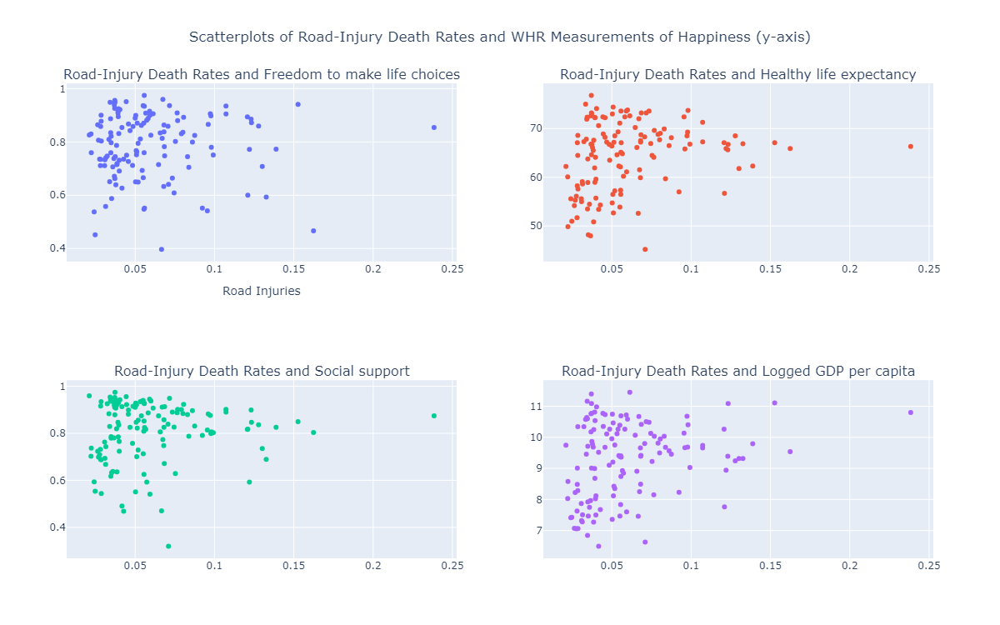
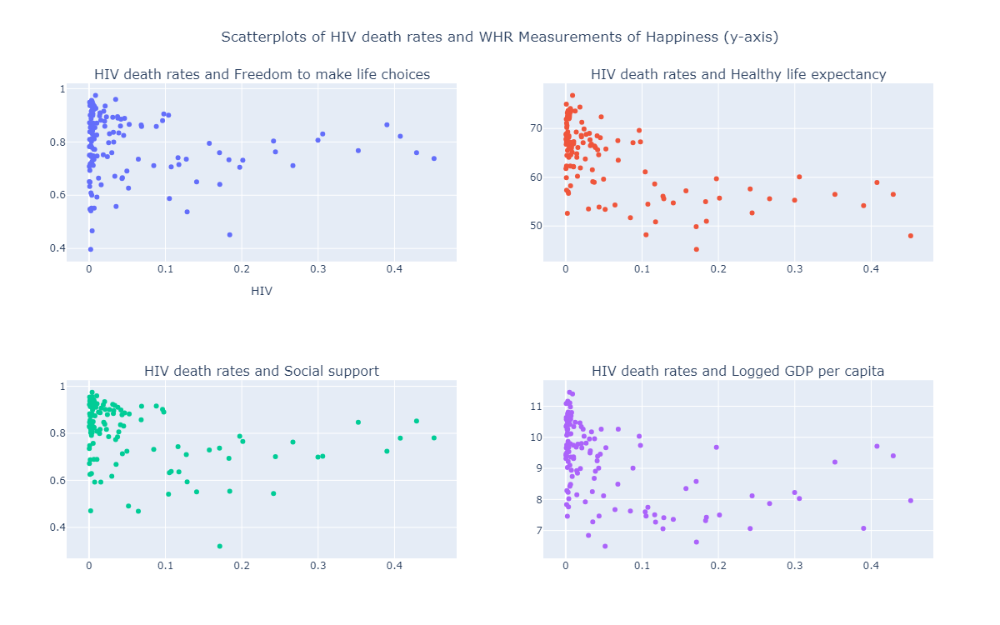
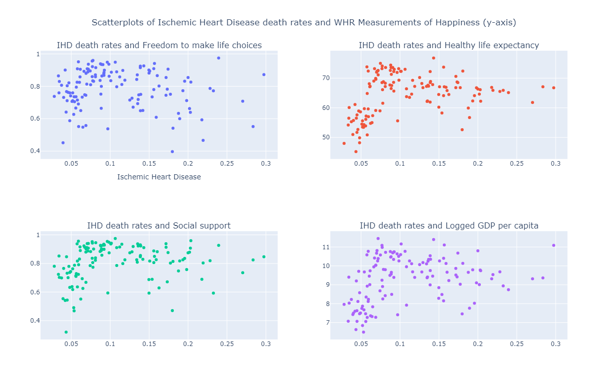

<!DOCTYPE html>
<html lang="en"></html>
<head>
    <meta charset="UTF-8">
    <meta name="viewport" content="width=device-width, initial-scale=1.0">
    <title>Project #3</title>
    <script src="https://cdn.plot.ly/plotly-latest.min.js"></script>
    <a href="file:///C:/Users/Beyonka/Project-3/index.html"></a>

    <style>
        .graph-container {
            width: 1200px; /* Adjust the width as needed */
            height: 800px; /* Adjust the height as needed */
            float: center; /* Align graphs horizontally */
            margin-right: 20000px; /* Add margin between graphs */
        }
    </style>
</head>
<body>

    <h1>Introduction</h1>
    
    <p>The goal of this research project is to utilize data visualization methods to assess whether there are patterns between select happiness metrics from World Happiness Report (WHR 2020), the varying prevalence of the top 3 causes of death (Global Burden of Disease 2020), and average levels of education per country (OECD 2020). Our group draws inspiration to pursue this project from the reports themselves - the specificity of phenomena assessed within each report are simultaneously factors we hypothesized to influence each other. Hence, our group’s goal is to uncover any relationships across these three datasets and convey our findings through data representation. Each team member will address one of the three research questions outlined below:</p>
    
    <p>Matt-- Does attaining a higher level of education correlate to being more happy?</p>

    <div class="graph-container">
        <div id="plot1" style="width: 1200px; height: 400px;"></div>
    

    <p>In this visualization we see the correlation between Average Years of Education Achieved from (OECD 2020) and the Freedom to Make Life Choices (WHR 2020). A very weak positive correlation exists between the two factors with an R-Squared = 0.07. It appears that while the citizens of about 75% of the world's countries have the freedom to make their own life choices, that choice does not always correlate to pursuing a higher education.</p>

    <div class="graph-container">
        <div id="plot2" style="width: 1200px; height: 400px;"></div>

    <p>This visualization shows strong positive correlation between Average Healthy Life Expectancy (WHR 2020) and Average Education Attained (OECD 2020) per country with R-squared = 0.52. As expected, we see more developed countries at the top end of this visualization. These countries often have better access to healthcare, higher standards of living, and greater awareness of healthy lifestyle practices. Environmental factors, cultural norms, diet and exercise, and more all play a part in a long and healthy life, but this visualization shows that education also plays a role in contributing to overall longevity, in turn, contributing to a greater sense of happiness.</p>

    <div class="graph-container">
        <div id="plot3" style="width: 1200px; height: 400px;"></div>

    <p>Social support is defined in the World Happiness Report as a binary response to the question, "If you were in trouble, do you have relatives or friends you can count on to help you whenever you need them, or not?"

    This visualization shows correlation between social support and education achieved globally. Again, we have a strong positive correlation with an r-squared value of 0.52. This plot shows that having a stronger social network correlates to finding more opportunities for education. Being more mentally healthy, building healthier habits, and finding more fulfillment in community engagement are all benefits of being more socially connected.</p>
    
    <p>Beyonka-- Does attaining a higher level of education correlate to lower cause of death prevalence?</p>

    <div class="graph-container">
        <div id="plot4" style="width: 1200px; height: 400px;"></div>

    <p>The first graph depicting the rate of road injuries within the top 3 causes of death (Global Burden of Disease 2020) and average years of education by location encompassing countries around the world demonstrates a slight negative correlation, with a range of 0.05 to 0.1. The data suggests that higher average years of education correspond to lower incidences of road injuries. As the incidence of road injuries increases, fewer countries are represented. Specifically, Saudi Arabia and Qatar emerge as two countries with the highest death rates for road injuries per 8 to 9 years of education. Saudi Arabia and Qatar's moderate average years of education coupled with higher road injuries could be influenced by various factors and should not be seen as a causal relationship. Perhaps these countries prioritize other areas of education or have different educational systems focusing less on road safety. Socioeconomic factors, infrastructure quality, and cultural norms regarding road safety hold influence as well. It's essential to consider the broader context- government policies, economic development, and societal attitudes, to fully understand the correlation between education and road injuries.
    </p>

    <div class="graph-container">
        <div id="plot5" style="width: 1200px; height: 400px;"></div>
    
    <p>The second graph illustrates the relationship between HIV incidence and average years of education. We observe a positive correlation between HIV incidence and average years of education. As the level of education increases, the HIV incidence tends to decrease. Conversely, areas with higher HIV incidences are associated with lower levels of education, typically ranging from 4 to 12 years. These countries are often clustered geographically, indicating proximity of HIV prevalence in certain regions. Some reason for the high cases of HIV in these countries are due education systems may not adequately address topics related to sexual health, HIV prevention, and safe practices, socioeconomic disparities which limits access to healthcare, and inadequate infrastructure, can exacerbate the spread of HIV or cultural and societal norms which can prevent behaviors related to HIV prevention and testing. </p>
    
    <div class="graph-container">
        <div id="plot6" style="width: 1200px; height: 400px;"></div>

    <p>The third graph depicts the correlation between Ischemic Heart Disease and average years of education. While a subtle positive correlation is evident between the two factors, no discernible relationship is observed with increasing levels of education to show any decrease of incidence to Ischemic Heart Disease.</p>

    <p>Leanne-- Does disease prevalence have an impact on a country’s happiness?</p>

    <p>Rates of the top 3 causes of death (Global Burden of Disease 2020) were compared against all measures of the World Happiness Report and average levels of education per country (OECD 2020) to assess whether there were any correlations between the variables.</p>

    

    
    <p>Across the various measures being tested against road injury death rates, weak correlations exist at almost R-squared = 0 for each measure. There appears to be no relationship that can be inferred between the rate of death due to road injury and the other factors. Saudi Arabia is listed as the country with the highest death rates for Road Injuries.</p>
    
    

    <p>Similarly weak correlations also exist amongst the various measures being tested against rates of death due to HIV. No correlational relationship can be assigned to rates of death due to HIV and the other factors. The countries bearing the highest rates of HIV listed in the graph are primarily located in Africa.</p>
    
    

    <p>If a regression analysis using a log-transformed fit is used for this representation, there may be a stronger correlation between the variables measured against rates of death due to ischemic heart disease. Yet, the correlation remains weak across the variables in this representation and no relationship can be inferred. In this view, Kuwait holds the highest Ischemic Heart Disease-related death rate.


    <p>The most informative section of the scatter matrix as it relates to the research question falls in the diagonal selection of twelve charts between “Road Injuries, Logged GDP per Capita” and “Ischemic Heart Disease, Freedom to make life choices.” Given that the patterns are most similar to one another when grouped by the cause of death, there are likely a series of un-assessed factors mentioned in the previous questions contributing more significantly to the outcomes seen across the causes of death and their affiliated rates.   As there are 7 variables in this analysis, a scatter matrix was generated in order to view overall patterns at first glance:</p>

    
    <div class="graph-container">
        <div id="plot7" style="width: 1200px; height: 400px;"></div>


<script>
        // Load Plotly plots using JavaScript

        var plot1_data = JSON.parse('{"data":[{"hovertemplate":"<b>%{hovertext}</b><br><br>Freedom to make life choices=%{x}<br>Avg Ed. (Years)=%{y}<extra></extra>","hovertext":["Afghanistan","Albania","Algeria","Argentina","Armenia","Australia","Austria","Bahrain","Bangladesh","Belgium","Benin","Bolivia","Botswana","Brazil","Bulgaria","Burundi","Cambodia","Cameroon","Canada","Central African Republic","Chile","China","Colombia","Costa Rica","Croatia","Cyprus","Denmark","Dominican Republic","Ecuador","Egypt","El Salvador","Estonia","Finland","France","Gabon","Gambia","Germany","Ghana","Greece","Guatemala","Haiti","Honduras","Hungary","Iceland","India","Indonesia","Iran","Iraq","Ireland","Israel","Italy","Jamaica","Japan","Jordan","Kazakhstan","Kenya","Kuwait","Kyrgyzstan","Laos","Latvia","Lesotho","Liberia","Libya","Lithuania","Luxembourg","Malawi","Malaysia","Maldives","Mali","Malta","Mauritania","Mauritius","Mexico","Moldova","Mongolia","Morocco","Mozambique","Myanmar","Namibia","Nepal","Netherlands","New Zealand","Nicaragua","Niger","Norway","Pakistan","Panama","Paraguay","Peru","Philippines","Poland","Portugal","Romania","Russia","Rwanda","Saudi Arabia","Senegal","Serbia","Sierra Leone","Singapore","Slovakia","Slovenia","South Africa","South Korea","Spain","Sri Lanka","Sweden","Switzerland","Tajikistan","Tanzania","Thailand","Togo","Trinidad and Tobago","Tunisia","Turkey","Uganda","Ukraine","United Arab Emirates","United Kingdom","United States","Uruguay","Venezuela","Vietnam","Yemen","Zambia","Zimbabwe"],"legendgroup":"","marker":{"color":"#636efa","symbol":"circle"},"mode":"markers","name":"","orientation":"v","showlegend":false,"x":[0.396573007,0.781994224,0.466610909,0.831132412,0.712017834,0.915431738,0.899989486,0.905855775,0.90062499,0.813582063,0.735182583,0.875873327,0.821328104,0.799804807,0.745178163,0.626350224,0.959704638,0.763051808,0.933913231,0.640880644,0.744896293,0.898517907,0.836179912,0.934738934,0.714838803,0.779858291,0.951444268,0.866202772,0.859828949,0.708354175,0.833805263,0.87770915,0.949172199,0.825467646,0.704829216,0.733163178,0.867371082,0.794796526,0.541345119,0.908147573,0.537825167,0.870603263,0.718964577,0.948891878,0.881444871,0.870614409,0.647873282,0.633182645,0.886982977,0.747580588,0.66465199,0.858068526,0.809961379,0.75104779,0.811601937,0.829747558,0.872366488,0.909374893,0.907213569,0.671237648,0.738125861,0.735268712,0.773157001,0.747381449,0.90563643,0.803223193,0.894626856,0.853962779,0.71156615,0.924911439,0.551522553,0.889534533,0.858709276,0.721609175,0.693351328,0.772072434,0.864451885,0.895075202,0.767520964,0.797565043,0.908547819,0.936217487,0.863902867,0.759772122,0.955750287,0.734833717,0.880366504,0.885923445,0.824766099,0.915463448,0.862055779,0.888747811,0.842823207,0.729892612,0.900589406,0.854191244,0.690596163,0.726495862,0.715315044,0.926645339,0.749952674,0.936142623,0.759330094,0.612965107,0.751989543,0.837633669,0.939144194,0.921336651,0.831383407,0.82153976,0.905063033,0.649828613,0.857907116,0.593361557,0.608830452,0.731713951,0.663081884,0.941345513,0.834743679,0.842619538,0.892395437,0.62327832,0.939592957,0.599920273,0.806500256,0.711457908],"xaxis":"x","y":[5.69,10.32,8.18,9.86,10.54,12.93,10.39,8.21,7.23,11.57,6.27,9.06,10.58,8.0,10.75,5.05,5.81,7.37,12.93,4.64,10.74,8.99,10.2,9.12,12.03,12.42,11.69,9.04,9.07,8.01,8.1,12.29,11.05,11.89,10.18,4.92,13.1,8.39,11.86,6.26,5.95,7.51,11.96,13.53,7.8,9.06,9.8,8.27,13.74,12.04,11.51,10.1,12.83,10.81,11.79,6.73,6.62,11.18,6.05,11.96,6.88,5.8,9.57,12.5,11.53,5.41,11.96,8.06,3.55,12.09,5.55,10.4,10.18,10.84,10.0,6.83,4.22,6.48,6.88,6.19,11.82,10.81,7.76,3.04,12.08,6.41,10.44,8.83,9.96,9.44,12.01,9.56,11.28,11.6,5.24,9.86,4.4,11.72,4.99,13.06,13.14,12.06,10.47,13.68,11.51,10.33,11.93,12.97,10.12,6.87,9.32,7.68,11.28,9.29,8.49,6.69,10.82,9.57,12.9,13.32,8.76,9.33,8.35,5.56,8.37,8.32],"yaxis":"y","type":"scatter"},{"hovertemplate":"<b>OLS trendline</b><br>Avg Ed. (Years) = 6.07342 * Freedom to make life choices + 4.54311<br>R<sup>2</sup>=0.070589<br><br>Freedom to make life choices=%{x}<br>Avg Ed. (Years)=%{y} <b>(trend)</b><extra></extra>","legendgroup":"","marker":{"color":"#636efa","symbol":"circle"},"mode":"lines","name":"","showlegend":false,"x":[0.396573007,0.466610909,0.537825167,0.541345119,0.551522553,0.593361557,0.599920273,0.608830452,0.612965107,0.62327832,0.626350224,0.633182645,0.640880644,0.647873282,0.649828613,0.663081884,0.66465199,0.671237648,0.690596163,0.693351328,0.704829216,0.708354175,0.711457908,0.71156615,0.712017834,0.714838803,0.715315044,0.718964577,0.721609175,0.726495862,0.729892612,0.731713951,0.733163178,0.734833717,0.735182583,0.735268712,0.738125861,0.744896293,0.745178163,0.747381449,0.747580588,0.749952674,0.75104779,0.751989543,0.759330094,0.759772122,0.763051808,0.767520964,0.772072434,0.773157001,0.779858291,0.781994224,0.794796526,0.797565043,0.799804807,0.803223193,0.806500256,0.809961379,0.811601937,0.813582063,0.821328104,0.82153976,0.824766099,0.825467646,0.829747558,0.831132412,0.831383407,0.833805263,0.834743679,0.836179912,0.837633669,0.842619538,0.842823207,0.853962779,0.854191244,0.857907116,0.858068526,0.858709276,0.859828949,0.862055779,0.863902867,0.864451885,0.866202772,0.867371082,0.870603263,0.870614409,0.872366488,0.875873327,0.87770915,0.880366504,0.881444871,0.885923445,0.886982977,0.888747811,0.889534533,0.892395437,0.894626856,0.895075202,0.898517907,0.899989486,0.900589406,0.90062499,0.905063033,0.90563643,0.905855775,0.907213569,0.908147573,0.908547819,0.909374893,0.915431738,0.915463448,0.921336651,0.924911439,0.926645339,0.933913231,0.934738934,0.936142623,0.936217487,0.939144194,0.939592957,0.941345513,0.948891878,0.949172199,0.951444268,0.955750287,0.959704638],"xaxis":"x","y":[6.951662474694861,7.377032138304321,7.809546307127613,7.830924457463434,7.892736298671747,8.146842183471593,8.186676026847282,8.240791294947833,8.265902795382143,8.328539279618104,8.347196245829348,8.388692414895182,8.435445603548605,8.477914837904065,8.489790386228101,8.570283080412388,8.579818995138261,8.619816468622076,8.737388879822067,8.75412215674459,8.823832202563882,8.845240762518564,8.864091039646276,8.864748438880314,8.867491705963582,8.884624638280469,8.887517050362817,8.90968220066303,8.925743957647729,8.9554228650107,8.976052757734575,8.987114516234264,8.995916281905139,9.006062168520597,9.008180978605237,9.008704076281079,9.026056744969129,9.06717642874165,9.068888343914116,9.082269827337985,9.08347928231911,9.097885959204902,9.104537059698078,9.110256722129046,9.154838978598951,9.157523600729208,9.177442514499138,9.204585580325668,9.232228573726992,9.23881560570222,9.279515361001135,9.292487781301539,9.370241550898559,9.387055920138046,9.40065894981253,9.421420247072795,9.441323230259483,9.462344087312296,9.472307886693265,9.484334025490574,9.53137899343486,9.532664469426429,9.55225938440718,9.556520174677512,9.582513882023544,9.590924683365486,9.592449081665105,9.607158032713217,9.612857428138366,9.621580275776989,9.630409554044917,9.660690835447816,9.661927803025996,9.729583113352016,9.730970677476888,9.753538732451691,9.75451904333255,9.758410587827385,9.765210833319639,9.778735309367129,9.789953452383708,9.793287869824933,9.803921743669527,9.811017382138132,9.830647778044264,9.830715472394541,9.841356585756948,9.862655095323419,9.873804821252623,9.889944050795382,9.896493427560518,9.923693692865866,9.930128676746786,9.940847256593832,9.945625350496389,9.96300082488023,9.976553171856612,9.97927616586064,10.000185162645788,10.009122681422475,10.012766248138574,10.012982364750831,10.03993646823032,10.043418949601687,10.044751124127195,10.052997578697337,10.058670178189107,10.061101040643855,10.066124209229915,10.102909978743467,10.103102566922836,10.138773001260233,10.160484193709076,10.171014898351434,10.215155866126139,10.220170708052033,10.228695902278186,10.229150582866655,10.246925706571439,10.249651233192015,10.26029524357623,10.306127495112325,10.30783000255569,10.321629234095028,10.347781500242661,10.371797938580059],"yaxis":"y","type":"scatter"}],"layout":{"template":{"data":{"histogram2dcontour":[{"type":"histogram2dcontour","colorbar":{"outlinewidth":0,"ticks":""},"colorscale":[[0.0,"#0d0887"],[0.1111111111111111,"#46039f"],[0.2222222222222222,"#7201a8"],[0.3333333333333333,"#9c179e"],[0.4444444444444444,"#bd3786"],[0.5555555555555556,"#d8576b"],[0.6666666666666666,"#ed7953"],[0.7777777777777778,"#fb9f3a"],[0.8888888888888888,"#fdca26"],[1.0,"#f0f921"]]}],"choropleth":[{"type":"choropleth","colorbar":{"outlinewidth":0,"ticks":""}}],"histogram2d":[{"type":"histogram2d","colorbar":{"outlinewidth":0,"ticks":""},"colorscale":[[0.0,"#0d0887"],[0.1111111111111111,"#46039f"],[0.2222222222222222,"#7201a8"],[0.3333333333333333,"#9c179e"],[0.4444444444444444,"#bd3786"],[0.5555555555555556,"#d8576b"],[0.6666666666666666,"#ed7953"],[0.7777777777777778,"#fb9f3a"],[0.8888888888888888,"#fdca26"],[1.0,"#f0f921"]]}],"heatmap":[{"type":"heatmap","colorbar":{"outlinewidth":0,"ticks":""},"colorscale":[[0.0,"#0d0887"],[0.1111111111111111,"#46039f"],[0.2222222222222222,"#7201a8"],[0.3333333333333333,"#9c179e"],[0.4444444444444444,"#bd3786"],[0.5555555555555556,"#d8576b"],[0.6666666666666666,"#ed7953"],[0.7777777777777778,"#fb9f3a"],[0.8888888888888888,"#fdca26"],[1.0,"#f0f921"]]}],"heatmapgl":[{"type":"heatmapgl","colorbar":{"outlinewidth":0,"ticks":""},"colorscale":[[0.0,"#0d0887"],[0.1111111111111111,"#46039f"],[0.2222222222222222,"#7201a8"],[0.3333333333333333,"#9c179e"],[0.4444444444444444,"#bd3786"],[0.5555555555555556,"#d8576b"],[0.6666666666666666,"#ed7953"],[0.7777777777777778,"#fb9f3a"],[0.8888888888888888,"#fdca26"],[1.0,"#f0f921"]]}],"contourcarpet":[{"type":"contourcarpet","colorbar":{"outlinewidth":0,"ticks":""}}],"contour":[{"type":"contour","colorbar":{"outlinewidth":0,"ticks":""},"colorscale":[[0.0,"#0d0887"],[0.1111111111111111,"#46039f"],[0.2222222222222222,"#7201a8"],[0.3333333333333333,"#9c179e"],[0.4444444444444444,"#bd3786"],[0.5555555555555556,"#d8576b"],[0.6666666666666666,"#ed7953"],[0.7777777777777778,"#fb9f3a"],[0.8888888888888888,"#fdca26"],[1.0,"#f0f921"]]}],"surface":[{"type":"surface","colorbar":{"outlinewidth":0,"ticks":""},"colorscale":[[0.0,"#0d0887"],[0.1111111111111111,"#46039f"],[0.2222222222222222,"#7201a8"],[0.3333333333333333,"#9c179e"],[0.4444444444444444,"#bd3786"],[0.5555555555555556,"#d8576b"],[0.6666666666666666,"#ed7953"],[0.7777777777777778,"#fb9f3a"],[0.8888888888888888,"#fdca26"],[1.0,"#f0f921"]]}],"mesh3d":[{"type":"mesh3d","colorbar":{"outlinewidth":0,"ticks":""}}],"scatter":[{"fillpattern":{"fillmode":"overlay","size":10,"solidity":0.2},"type":"scatter"}],"parcoords":[{"type":"parcoords","line":{"colorbar":{"outlinewidth":0,"ticks":""}}}],"scatterpolargl":[{"type":"scatterpolargl","marker":{"colorbar":{"outlinewidth":0,"ticks":""}}}],"bar":[{"error_x":{"color":"#2a3f5f"},"error_y":{"color":"#2a3f5f"},"marker":{"line":{"color":"#E5ECF6","width":0.5},"pattern":{"fillmode":"overlay","size":10,"solidity":0.2}},"type":"bar"}],"scattergeo":[{"type":"scattergeo","marker":{"colorbar":{"outlinewidth":0,"ticks":""}}}],"scatterpolar":[{"type":"scatterpolar","marker":{"colorbar":{"outlinewidth":0,"ticks":""}}}],"histogram":[{"marker":{"pattern":{"fillmode":"overlay","size":10,"solidity":0.2}},"type":"histogram"}],"scattergl":[{"type":"scattergl","marker":{"colorbar":{"outlinewidth":0,"ticks":""}}}],"scatter3d":[{"type":"scatter3d","line":{"colorbar":{"outlinewidth":0,"ticks":""}},"marker":{"colorbar":{"outlinewidth":0,"ticks":""}}}],"scattermapbox":[{"type":"scattermapbox","marker":{"colorbar":{"outlinewidth":0,"ticks":""}}}],"scatterternary":[{"type":"scatterternary","marker":{"colorbar":{"outlinewidth":0,"ticks":""}}}],"scattercarpet":[{"type":"scattercarpet","marker":{"colorbar":{"outlinewidth":0,"ticks":""}}}],"carpet":[{"aaxis":{"endlinecolor":"#2a3f5f","gridcolor":"white","linecolor":"white","minorgridcolor":"white","startlinecolor":"#2a3f5f"},"baxis":{"endlinecolor":"#2a3f5f","gridcolor":"white","linecolor":"white","minorgridcolor":"white","startlinecolor":"#2a3f5f"},"type":"carpet"}],"table":[{"cells":{"fill":{"color":"#EBF0F8"},"line":{"color":"white"}},"header":{"fill":{"color":"#C8D4E3"},"line":{"color":"white"}},"type":"table"}],"barpolar":[{"marker":{"line":{"color":"#E5ECF6","width":0.5},"pattern":{"fillmode":"overlay","size":10,"solidity":0.2}},"type":"barpolar"}],"pie":[{"automargin":true,"type":"pie"}]},"layout":{"autotypenumbers":"strict","colorway":["#636efa","#EF553B","#00cc96","#ab63fa","#FFA15A","#19d3f3","#FF6692","#B6E880","#FF97FF","#FECB52"],"font":{"color":"#2a3f5f"},"hovermode":"closest","hoverlabel":{"align":"left"},"paper_bgcolor":"white","plot_bgcolor":"#E5ECF6","polar":{"bgcolor":"#E5ECF6","angularaxis":{"gridcolor":"white","linecolor":"white","ticks":""},"radialaxis":{"gridcolor":"white","linecolor":"white","ticks":""}},"ternary":{"bgcolor":"#E5ECF6","aaxis":{"gridcolor":"white","linecolor":"white","ticks":""},"baxis":{"gridcolor":"white","linecolor":"white","ticks":""},"caxis":{"gridcolor":"white","linecolor":"white","ticks":""}},"coloraxis":{"colorbar":{"outlinewidth":0,"ticks":""}},"colorscale":{"sequential":[[0.0,"#0d0887"],[0.1111111111111111,"#46039f"],[0.2222222222222222,"#7201a8"],[0.3333333333333333,"#9c179e"],[0.4444444444444444,"#bd3786"],[0.5555555555555556,"#d8576b"],[0.6666666666666666,"#ed7953"],[0.7777777777777778,"#fb9f3a"],[0.8888888888888888,"#fdca26"],[1.0,"#f0f921"]],"sequentialminus":[[0.0,"#0d0887"],[0.1111111111111111,"#46039f"],[0.2222222222222222,"#7201a8"],[0.3333333333333333,"#9c179e"],[0.4444444444444444,"#bd3786"],[0.5555555555555556,"#d8576b"],[0.6666666666666666,"#ed7953"],[0.7777777777777778,"#fb9f3a"],[0.8888888888888888,"#fdca26"],[1.0,"#f0f921"]],"diverging":[[0,"#8e0152"],[0.1,"#c51b7d"],[0.2,"#de77ae"],[0.3,"#f1b6da"],[0.4,"#fde0ef"],[0.5,"#f7f7f7"],[0.6,"#e6f5d0"],[0.7,"#b8e186"],[0.8,"#7fbc41"],[0.9,"#4d9221"],[1,"#276419"]]},"xaxis":{"gridcolor":"white","linecolor":"white","ticks":"","title":{"standoff":15},"zerolinecolor":"white","automargin":true,"zerolinewidth":2},"yaxis":{"gridcolor":"white","linecolor":"white","ticks":"","title":{"standoff":15},"zerolinecolor":"white","automargin":true,"zerolinewidth":2},"scene":{"xaxis":{"backgroundcolor":"#E5ECF6","gridcolor":"white","linecolor":"white","showbackground":true,"ticks":"","zerolinecolor":"white","gridwidth":2},"yaxis":{"backgroundcolor":"#E5ECF6","gridcolor":"white","linecolor":"white","showbackground":true,"ticks":"","zerolinecolor":"white","gridwidth":2},"zaxis":{"backgroundcolor":"#E5ECF6","gridcolor":"white","linecolor":"white","showbackground":true,"ticks":"","zerolinecolor":"white","gridwidth":2}},"shapedefaults":{"line":{"color":"#2a3f5f"}},"annotationdefaults":{"arrowcolor":"#2a3f5f","arrowhead":0,"arrowwidth":1},"geo":{"bgcolor":"white","landcolor":"#E5ECF6","subunitcolor":"white","showland":true,"showlakes":true,"lakecolor":"white"},"title":{"x":0.05},"mapbox":{"style":"light"}}},"xaxis":{"anchor":"y","domain":[0.0,1.0],"title":{"text":"Perceived Freedom to Make Life Choices"}},"yaxis":{"anchor":"x","domain":[0.0,1.0],"title":{"text":"Average Years of Education"}},"legend":{"tracegroupgap":0},"margin":{"t":60},"title":{"text":"Perceived Freedom to Make Life Choices and average years of education achieved"}}}')

        var plot2_data = JSON.parse('{"data":[{"hovertemplate":"<b>%{hovertext}</b><br><br>Healthy life expectancy=%{x}<br>Avg Ed. (Years)=%{y}<extra></extra>","hovertext":["Afghanistan","Albania","Algeria","Argentina","Armenia","Australia","Austria","Bahrain","Bangladesh","Belgium","Benin","Bolivia","Botswana","Brazil","Bulgaria","Burundi","Cambodia","Cameroon","Canada","Central African Republic","Chile","China","Colombia","Costa Rica","Croatia","Cyprus","Denmark","Dominican Republic","Ecuador","Egypt","El Salvador","Estonia","Finland","France","Gabon","Gambia","Germany","Ghana","Greece","Guatemala","Haiti","Honduras","Hungary","Iceland","India","Indonesia","Iran","Iraq","Ireland","Israel","Italy","Jamaica","Japan","Jordan","Kazakhstan","Kenya","Kuwait","Kyrgyzstan","Laos","Latvia","Lesotho","Liberia","Libya","Lithuania","Luxembourg","Malawi","Malaysia","Maldives","Mali","Malta","Mauritania","Mauritius","Mexico","Moldova","Mongolia","Morocco","Mozambique","Myanmar","Namibia","Nepal","Netherlands","New Zealand","Nicaragua","Niger","Norway","Pakistan","Panama","Paraguay","Peru","Philippines","Poland","Portugal","Romania","Russia","Rwanda","Saudi Arabia","Senegal","Serbia","Sierra Leone","Singapore","Slovakia","Slovenia","South Africa","South Korea","Spain","Sri Lanka","Sweden","Switzerland","Tajikistan","Tanzania","Thailand","Togo","Trinidad and Tobago","Tunisia","Turkey","Uganda","Ukraine","United Arab Emirates","United Kingdom","United States","Uruguay","Venezuela","Vietnam","Yemen","Zambia","Zimbabwe"],"legendgroup":"","marker":{"color":"#636efa","symbol":"circle"},"mode":"markers","name":"","orientation":"v","showlegend":false,"x":[52.59000015,68.70813751,65.90517426,68.80380249,66.75065613,73.60453796,73.00250244,68.5,64.50306702,72.00164795,54.31246567,63.6004715,58.92445374,66.48016357,66.80397797,53.40000153,61.52996826,52.7049408,73.60160065,45.20000076,69.90061951,69.2891922,67.69958496,71.29985046,70.21490479,73.70222473,72.40250397,65.80748749,68.50003815,61.78015137,66.10826111,68.60495758,71.9008255,73.80193329,59.71533966,55.0120163,72.20201874,57.20398712,72.40525818,64.8089447,55.59862518,67.19876862,67.60997009,73.0,60.21518707,62.15584946,66.00614929,59.90354919,72.30078888,73.20025635,73.60168457,67.09999847,75.00096893,66.79975128,64.60996246,60.09693146,66.76764679,64.10601044,58.70992279,66.8074646,48.00362396,56.09631348,62.29999924,67.29407501,72.59999847,57.59288788,67.10215759,70.59999847,51.72698212,72.19999695,57.01017761,66.40434265,68.29902649,65.01301575,62.30448532,65.89624023,54.20582199,58.96171188,56.50148773,63.77917862,72.30091858,73.20262909,67.50717926,53.50009537,73.20078278,58.25313568,69.60301208,65.63993835,68.10023499,61.92676163,69.31113434,72.40202332,67.20723724,64.10045624,61.09884644,66.30514526,59.59915161,68.21020508,50.86514282,76.80458069,68.90634155,71.1029892,56.50601196,73.6027298,74.40270996,67.20006561,72.60076904,74.10244751,64.10459137,57.49607468,67.25059509,54.71989822,63.5,66.89785767,66.90281677,55.70820236,64.60678101,67.08278656,72.30160522,68.29949951,69.00254822,66.50534058,67.9527359,56.72728348,55.29937744,55.61725998],"xaxis":"x","y":[5.69,10.32,8.18,9.86,10.54,12.93,10.39,8.21,7.23,11.57,6.27,9.06,10.58,8.0,10.75,5.05,5.81,7.37,12.93,4.64,10.74,8.99,10.2,9.12,12.03,12.42,11.69,9.04,9.07,8.01,8.1,12.29,11.05,11.89,10.18,4.92,13.1,8.39,11.86,6.26,5.95,7.51,11.96,13.53,7.8,9.06,9.8,8.27,13.74,12.04,11.51,10.1,12.83,10.81,11.79,6.73,6.62,11.18,6.05,11.96,6.88,5.8,9.57,12.5,11.53,5.41,11.96,8.06,3.55,12.09,5.55,10.4,10.18,10.84,10.0,6.83,4.22,6.48,6.88,6.19,11.82,10.81,7.76,3.04,12.08,6.41,10.44,8.83,9.96,9.44,12.01,9.56,11.28,11.6,5.24,9.86,4.4,11.72,4.99,13.06,13.14,12.06,10.47,13.68,11.51,10.33,11.93,12.97,10.12,6.87,9.32,7.68,11.28,9.29,8.49,6.69,10.82,9.57,12.9,13.32,8.76,9.33,8.35,5.56,8.37,8.32],"yaxis":"y","type":"scatter"},{"hovertemplate":"<b>OLS trendline</b><br>Avg Ed. (Years) = 0.305135 * Healthy life expectancy + -10.4719<br>R<sup>2</sup>=0.628795<br><br>Healthy life expectancy=%{x}<br>Avg Ed. (Years)=%{y} <b>(trend)</b><extra></extra>","legendgroup":"","marker":{"color":"#636efa","symbol":"circle"},"mode":"lines","name":"","showlegend":false,"x":[45.20000076,48.00362396,50.86514282,51.72698212,52.59000015,52.7049408,53.40000153,53.50009537,54.20582199,54.31246567,54.71989822,55.0120163,55.29937744,55.59862518,55.61725998,55.70820236,56.09631348,56.50148773,56.50601196,56.72728348,57.01017761,57.20398712,57.49607468,57.59288788,58.25313568,58.70992279,58.92445374,58.96171188,59.59915161,59.71533966,59.90354919,60.09693146,60.21518707,61.09884644,61.52996826,61.78015137,61.92676163,62.15584946,62.29999924,62.30448532,63.5,63.6004715,63.77917862,64.10045624,64.10459137,64.10601044,64.50306702,64.60678101,64.60996246,64.8089447,65.01301575,65.63993835,65.80748749,65.89624023,65.90517426,66.00614929,66.10826111,66.30514526,66.40434265,66.48016357,66.50534058,66.75065613,66.76764679,66.79975128,66.80397797,66.8074646,66.89785767,66.90281677,67.08278656,67.09999847,67.10215759,67.19876862,67.20006561,67.20723724,67.25059509,67.29407501,67.50717926,67.60997009,67.69958496,67.9527359,68.10023499,68.21020508,68.29902649,68.29949951,68.5,68.50003815,68.60495758,68.70813751,68.80380249,68.90634155,69.00254822,69.2891922,69.31113434,69.60301208,69.90061951,70.21490479,70.59999847,71.1029892,71.29985046,71.9008255,72.00164795,72.19999695,72.20201874,72.30078888,72.30091858,72.30160522,72.40202332,72.40250397,72.40525818,72.59999847,72.60076904,73.0,73.00250244,73.20025635,73.20078278,73.20262909,73.60160065,73.60168457,73.6027298,73.60453796,73.70222473,73.80193329,74.10244751,74.40270996,75.00096893,76.80458069],"xaxis":"x","y":[3.3202232627608836,4.175706260048193,5.048855237823441,5.311832398072363,5.575169229861096,5.610241621818815,5.822328836890048,5.852870950485482,6.068212699741604,6.100753397438837,6.225075246061863,6.3142106372371885,6.401894520489083,6.493205419024466,6.498891544948183,6.52664122965005,6.645067437643384,6.768700200353308,6.770080700358022,6.83759834079698,6.923919183857269,6.983057209437021,7.072183287898326,7.101724364071821,7.303188942798503,7.442570585090877,7.508031443068116,7.51940019807077,7.713905240977539,7.749358258081607,7.806787534898277,7.865795194687163,7.901879096293069,8.171514319182016,8.303064588408478,8.379404161006342,8.424140052997064,8.494042721604757,8.538027835529018,8.539396694641212,8.904189824383959,8.934847175187002,8.989376936052938,9.087409917560198,9.088671689615222,9.089104697252257,9.210260476370877,9.24190722370334,9.242877994804719,9.303594400305336,9.365863578814619,9.557159479388975,9.60828455228754,9.635366101631497,9.63809218506605,9.66890318039366,9.700061049907678,9.760137255141093,9.790405830647344,9.813541431714807,9.821223813561812,9.89607812422495,9.901262565822773,9.91105876287649,9.912348473073571,9.91341236521244,9.94099443631871,9.942507630292798,9.997422675713441,10.0026746283852,10.003333451029093,10.032812838100583,10.03320859488154,10.035396908749053,10.048626897527122,10.061894134109917,10.126919656271617,10.15828471536446,10.185629330571345,10.262874491375158,10.307881596327906,10.341437297466758,10.368539800417256,10.368684135279153,10.429863811686015,10.429875452578536,10.46189002160125,10.493373808643778,10.522564522940133,10.55385275824501,10.583208761009804,10.670673813790351,10.677369124235096,10.766431179313201,10.857241562188964,10.953140937446555,11.070646419496637,11.224126394019649,11.284195614717554,11.467574011826713,11.49833844968693,11.558861631628403,11.559478550110558,11.589616756774596,11.589656332757826,11.589865850515157,11.620506907120014,11.620653570160414,11.62149397547093,11.680916014417459,11.68115114213834,11.802970400257863,11.803733981780422,11.864075581055275,11.864236213166702,11.8647995865946,11.986539692747662,11.986565299659869,11.98688423570422,11.987435968239595,12.017243601018105,12.047668152278774,12.139365497932449,12.230986019798163,12.41353564943799,12.963880358522804],"yaxis":"y","type":"scatter"}],"layout":{"template":{"data":{"histogram2dcontour":[{"type":"histogram2dcontour","colorbar":{"outlinewidth":0,"ticks":""},"colorscale":[[0.0,"#0d0887"],[0.1111111111111111,"#46039f"],[0.2222222222222222,"#7201a8"],[0.3333333333333333,"#9c179e"],[0.4444444444444444,"#bd3786"],[0.5555555555555556,"#d8576b"],[0.6666666666666666,"#ed7953"],[0.7777777777777778,"#fb9f3a"],[0.8888888888888888,"#fdca26"],[1.0,"#f0f921"]]}],"choropleth":[{"type":"choropleth","colorbar":{"outlinewidth":0,"ticks":""}}],"histogram2d":[{"type":"histogram2d","colorbar":{"outlinewidth":0,"ticks":""},"colorscale":[[0.0,"#0d0887"],[0.1111111111111111,"#46039f"],[0.2222222222222222,"#7201a8"],[0.3333333333333333,"#9c179e"],[0.4444444444444444,"#bd3786"],[0.5555555555555556,"#d8576b"],[0.6666666666666666,"#ed7953"],[0.7777777777777778,"#fb9f3a"],[0.8888888888888888,"#fdca26"],[1.0,"#f0f921"]]}],"heatmap":[{"type":"heatmap","colorbar":{"outlinewidth":0,"ticks":""},"colorscale":[[0.0,"#0d0887"],[0.1111111111111111,"#46039f"],[0.2222222222222222,"#7201a8"],[0.3333333333333333,"#9c179e"],[0.4444444444444444,"#bd3786"],[0.5555555555555556,"#d8576b"],[0.6666666666666666,"#ed7953"],[0.7777777777777778,"#fb9f3a"],[0.8888888888888888,"#fdca26"],[1.0,"#f0f921"]]}],"heatmapgl":[{"type":"heatmapgl","colorbar":{"outlinewidth":0,"ticks":""},"colorscale":[[0.0,"#0d0887"],[0.1111111111111111,"#46039f"],[0.2222222222222222,"#7201a8"],[0.3333333333333333,"#9c179e"],[0.4444444444444444,"#bd3786"],[0.5555555555555556,"#d8576b"],[0.6666666666666666,"#ed7953"],[0.7777777777777778,"#fb9f3a"],[0.8888888888888888,"#fdca26"],[1.0,"#f0f921"]]}],"contourcarpet":[{"type":"contourcarpet","colorbar":{"outlinewidth":0,"ticks":""}}],"contour":[{"type":"contour","colorbar":{"outlinewidth":0,"ticks":""},"colorscale":[[0.0,"#0d0887"],[0.1111111111111111,"#46039f"],[0.2222222222222222,"#7201a8"],[0.3333333333333333,"#9c179e"],[0.4444444444444444,"#bd3786"],[0.5555555555555556,"#d8576b"],[0.6666666666666666,"#ed7953"],[0.7777777777777778,"#fb9f3a"],[0.8888888888888888,"#fdca26"],[1.0,"#f0f921"]]}],"surface":[{"type":"surface","colorbar":{"outlinewidth":0,"ticks":""},"colorscale":[[0.0,"#0d0887"],[0.1111111111111111,"#46039f"],[0.2222222222222222,"#7201a8"],[0.3333333333333333,"#9c179e"],[0.4444444444444444,"#bd3786"],[0.5555555555555556,"#d8576b"],[0.6666666666666666,"#ed7953"],[0.7777777777777778,"#fb9f3a"],[0.8888888888888888,"#fdca26"],[1.0,"#f0f921"]]}],"mesh3d":[{"type":"mesh3d","colorbar":{"outlinewidth":0,"ticks":""}}],"scatter":[{"fillpattern":{"fillmode":"overlay","size":10,"solidity":0.2},"type":"scatter"}],"parcoords":[{"type":"parcoords","line":{"colorbar":{"outlinewidth":0,"ticks":""}}}],"scatterpolargl":[{"type":"scatterpolargl","marker":{"colorbar":{"outlinewidth":0,"ticks":""}}}],"bar":[{"error_x":{"color":"#2a3f5f"},"error_y":{"color":"#2a3f5f"},"marker":{"line":{"color":"#E5ECF6","width":0.5},"pattern":{"fillmode":"overlay","size":10,"solidity":0.2}},"type":"bar"}],"scattergeo":[{"type":"scattergeo","marker":{"colorbar":{"outlinewidth":0,"ticks":""}}}],"scatterpolar":[{"type":"scatterpolar","marker":{"colorbar":{"outlinewidth":0,"ticks":""}}}],"histogram":[{"marker":{"pattern":{"fillmode":"overlay","size":10,"solidity":0.2}},"type":"histogram"}],"scattergl":[{"type":"scattergl","marker":{"colorbar":{"outlinewidth":0,"ticks":""}}}],"scatter3d":[{"type":"scatter3d","line":{"colorbar":{"outlinewidth":0,"ticks":""}},"marker":{"colorbar":{"outlinewidth":0,"ticks":""}}}],"scattermapbox":[{"type":"scattermapbox","marker":{"colorbar":{"outlinewidth":0,"ticks":""}}}],"scatterternary":[{"type":"scatterternary","marker":{"colorbar":{"outlinewidth":0,"ticks":""}}}],"scattercarpet":[{"type":"scattercarpet","marker":{"colorbar":{"outlinewidth":0,"ticks":""}}}],"carpet":[{"aaxis":{"endlinecolor":"#2a3f5f","gridcolor":"white","linecolor":"white","minorgridcolor":"white","startlinecolor":"#2a3f5f"},"baxis":{"endlinecolor":"#2a3f5f","gridcolor":"white","linecolor":"white","minorgridcolor":"white","startlinecolor":"#2a3f5f"},"type":"carpet"}],"table":[{"cells":{"fill":{"color":"#EBF0F8"},"line":{"color":"white"}},"header":{"fill":{"color":"#C8D4E3"},"line":{"color":"white"}},"type":"table"}],"barpolar":[{"marker":{"line":{"color":"#E5ECF6","width":0.5},"pattern":{"fillmode":"overlay","size":10,"solidity":0.2}},"type":"barpolar"}],"pie":[{"automargin":true,"type":"pie"}]},"layout":{"autotypenumbers":"strict","colorway":["#636efa","#EF553B","#00cc96","#ab63fa","#FFA15A","#19d3f3","#FF6692","#B6E880","#FF97FF","#FECB52"],"font":{"color":"#2a3f5f"},"hovermode":"closest","hoverlabel":{"align":"left"},"paper_bgcolor":"white","plot_bgcolor":"#E5ECF6","polar":{"bgcolor":"#E5ECF6","angularaxis":{"gridcolor":"white","linecolor":"white","ticks":""},"radialaxis":{"gridcolor":"white","linecolor":"white","ticks":""}},"ternary":{"bgcolor":"#E5ECF6","aaxis":{"gridcolor":"white","linecolor":"white","ticks":""},"baxis":{"gridcolor":"white","linecolor":"white","ticks":""},"caxis":{"gridcolor":"white","linecolor":"white","ticks":""}},"coloraxis":{"colorbar":{"outlinewidth":0,"ticks":""}},"colorscale":{"sequential":[[0.0,"#0d0887"],[0.1111111111111111,"#46039f"],[0.2222222222222222,"#7201a8"],[0.3333333333333333,"#9c179e"],[0.4444444444444444,"#bd3786"],[0.5555555555555556,"#d8576b"],[0.6666666666666666,"#ed7953"],[0.7777777777777778,"#fb9f3a"],[0.8888888888888888,"#fdca26"],[1.0,"#f0f921"]],"sequentialminus":[[0.0,"#0d0887"],[0.1111111111111111,"#46039f"],[0.2222222222222222,"#7201a8"],[0.3333333333333333,"#9c179e"],[0.4444444444444444,"#bd3786"],[0.5555555555555556,"#d8576b"],[0.6666666666666666,"#ed7953"],[0.7777777777777778,"#fb9f3a"],[0.8888888888888888,"#fdca26"],[1.0,"#f0f921"]],"diverging":[[0,"#8e0152"],[0.1,"#c51b7d"],[0.2,"#de77ae"],[0.3,"#f1b6da"],[0.4,"#fde0ef"],[0.5,"#f7f7f7"],[0.6,"#e6f5d0"],[0.7,"#b8e186"],[0.8,"#7fbc41"],[0.9,"#4d9221"],[1,"#276419"]]},"xaxis":{"gridcolor":"white","linecolor":"white","ticks":"","title":{"standoff":15},"zerolinecolor":"white","automargin":true,"zerolinewidth":2},"yaxis":{"gridcolor":"white","linecolor":"white","ticks":"","title":{"standoff":15},"zerolinecolor":"white","automargin":true,"zerolinewidth":2},"scene":{"xaxis":{"backgroundcolor":"#E5ECF6","gridcolor":"white","linecolor":"white","showbackground":true,"ticks":"","zerolinecolor":"white","gridwidth":2},"yaxis":{"backgroundcolor":"#E5ECF6","gridcolor":"white","linecolor":"white","showbackground":true,"ticks":"","zerolinecolor":"white","gridwidth":2},"zaxis":{"backgroundcolor":"#E5ECF6","gridcolor":"white","linecolor":"white","showbackground":true,"ticks":"","zerolinecolor":"white","gridwidth":2}},"shapedefaults":{"line":{"color":"#2a3f5f"}},"annotationdefaults":{"arrowcolor":"#2a3f5f","arrowhead":0,"arrowwidth":1},"geo":{"bgcolor":"white","landcolor":"#E5ECF6","subunitcolor":"white","showland":true,"showlakes":true,"lakecolor":"white"},"title":{"x":0.05},"mapbox":{"style":"light"}}},"xaxis":{"anchor":"y","domain":[0.0,1.0],"title":{"text":"Healthy Life Expectancy"}},"yaxis":{"anchor":"x","domain":[0.0,1.0],"title":{"text":"Average Years of Education"}},"legend":{"tracegroupgap":0},"margin":{"t":60},"title":{"text":"Life Expectancy and average years of education achieved"}}}')
        
        var plot3_data = JSON.parse('{"data":[{"hovertemplate":"<b>%{hovertext}</b><br><br>Social support=%{x}<br>Avg Ed. (Years)=%{y}<extra></extra>","hovertext":["Afghanistan","Albania","Algeria","Argentina","Armenia","Australia","Austria","Bahrain","Bangladesh","Belgium","Benin","Bolivia","Botswana","Brazil","Bulgaria","Burundi","Cambodia","Cameroon","Canada","Central African Republic","Chile","China","Colombia","Costa Rica","Croatia","Cyprus","Denmark","Dominican Republic","Ecuador","Egypt","El Salvador","Estonia","Finland","France","Gabon","Gambia","Germany","Ghana","Greece","Guatemala","Haiti","Honduras","Hungary","Iceland","India","Indonesia","Iran","Iraq","Ireland","Israel","Italy","Jamaica","Japan","Jordan","Kazakhstan","Kenya","Kuwait","Kyrgyzstan","Laos","Latvia","Lesotho","Liberia","Libya","Lithuania","Luxembourg","Malawi","Malaysia","Maldives","Mali","Malta","Mauritania","Mauritius","Mexico","Moldova","Mongolia","Morocco","Mozambique","Myanmar","Namibia","Nepal","Netherlands","New Zealand","Nicaragua","Niger","Norway","Pakistan","Panama","Paraguay","Peru","Philippines","Poland","Portugal","Romania","Russia","Rwanda","Saudi Arabia","Senegal","Serbia","Sierra Leone","Singapore","Slovakia","Slovenia","South Africa","South Korea","Spain","Sri Lanka","Sweden","Switzerland","Tajikistan","Tanzania","Thailand","Togo","Trinidad and Tobago","Tunisia","Turkey","Uganda","Ukraine","United Arab Emirates","United Kingdom","United States","Uruguay","Venezuela","Vietnam","Yemen","Zambia","Zimbabwe"],"legendgroup":"","marker":{"color":"#636efa","symbol":"circle"},"mode":"markers","name":"","orientation":"v","showlegend":false,"x":[0.470366955,0.671070457,0.803385139,0.900567949,0.757479429,0.944854617,0.928045869,0.876342118,0.687292993,0.911632538,0.468671143,0.803108692,0.779121757,0.896723807,0.937840343,0.490325719,0.773080647,0.700386405,0.927176654,0.319459856,0.879713595,0.798760593,0.884440243,0.901545942,0.874623716,0.805996239,0.955990791,0.882085383,0.836418986,0.735447824,0.806092262,0.934729993,0.954329729,0.937103748,0.787886858,0.6931687,0.898874462,0.728601098,0.814380348,0.816621482,0.593247831,0.821870148,0.921934128,0.974669576,0.592200935,0.808379889,0.694689691,0.747694969,0.942081571,0.913571239,0.889878571,0.915701866,0.883545935,0.80216372,0.934744895,0.702652037,0.846475244,0.887228489,0.737502217,0.918288589,0.780495703,0.70928055,0.825942934,0.926107109,0.906912208,0.544007301,0.816509426,0.91316092,0.731468976,0.93037951,0.790819228,0.910357833,0.838665426,0.843313575,0.937142491,0.592628479,0.723874032,0.78440702,0.846880972,0.785512447,0.93913883,0.949118972,0.857497036,0.617435038,0.952486575,0.689062297,0.902094483,0.898727894,0.831075251,0.846730053,0.874257445,0.886590719,0.825161517,0.903150737,0.54083544,0.874067068,0.723616004,0.881475747,0.636142015,0.910268962,0.922493756,0.939575672,0.852532268,0.799387157,0.921125412,0.825374067,0.926311195,0.942846596,0.835297108,0.688933194,0.889973223,0.551312625,0.91529417,0.688718557,0.826313555,0.764994621,0.878879368,0.849181116,0.93668282,0.914219022,0.92281127,0.890408158,0.849987149,0.817980587,0.698824465,0.763092756],"xaxis":"x","y":[5.69,10.32,8.18,9.86,10.54,12.93,10.39,8.21,7.23,11.57,6.27,9.06,10.58,8.0,10.75,5.05,5.81,7.37,12.93,4.64,10.74,8.99,10.2,9.12,12.03,12.42,11.69,9.04,9.07,8.01,8.1,12.29,11.05,11.89,10.18,4.92,13.1,8.39,11.86,6.26,5.95,7.51,11.96,13.53,7.8,9.06,9.8,8.27,13.74,12.04,11.51,10.1,12.83,10.81,11.79,6.73,6.62,11.18,6.05,11.96,6.88,5.8,9.57,12.5,11.53,5.41,11.96,8.06,3.55,12.09,5.55,10.4,10.18,10.84,10.0,6.83,4.22,6.48,6.88,6.19,11.82,10.81,7.76,3.04,12.08,6.41,10.44,8.83,9.96,9.44,12.01,9.56,11.28,11.6,5.24,9.86,4.4,11.72,4.99,13.06,13.14,12.06,10.47,13.68,11.51,10.33,11.93,12.97,10.12,6.87,9.32,7.68,11.28,9.29,8.49,6.69,10.82,9.57,12.9,13.32,8.76,9.33,8.35,5.56,8.37,8.32],"yaxis":"y","type":"scatter"},{"hovertemplate":"<b>OLS trendline</b><br>Avg Ed. (Years) = 15.2831 * Social support + -3.09289<br>R<sup>2</sup>=0.524172<br><br>Social support=%{x}<br>Avg Ed. (Years)=%{y} <b>(trend)</b><extra></extra>","legendgroup":"","marker":{"color":"#636efa","symbol":"circle"},"mode":"lines","name":"","showlegend":false,"x":[0.319459856,0.468671143,0.470366955,0.490325719,0.54083544,0.544007301,0.551312625,0.592200935,0.592628479,0.593247831,0.617435038,0.636142015,0.671070457,0.687292993,0.688718557,0.688933194,0.689062297,0.6931687,0.694689691,0.698824465,0.700386405,0.702652037,0.70928055,0.723616004,0.723874032,0.728601098,0.731468976,0.735447824,0.737502217,0.747694969,0.757479429,0.763092756,0.764994621,0.773080647,0.779121757,0.780495703,0.78440702,0.785512447,0.787886858,0.790819228,0.798760593,0.799387157,0.80216372,0.803108692,0.803385139,0.805996239,0.806092262,0.808379889,0.814380348,0.816509426,0.816621482,0.817980587,0.821870148,0.825161517,0.825374067,0.825942934,0.826313555,0.831075251,0.835297108,0.836418986,0.838665426,0.843313575,0.846475244,0.846730053,0.846880972,0.849181116,0.849987149,0.852532268,0.857497036,0.874067068,0.874257445,0.874623716,0.876342118,0.878879368,0.879713595,0.881475747,0.882085383,0.883545935,0.884440243,0.886590719,0.887228489,0.889878571,0.889973223,0.890408158,0.896723807,0.898727894,0.898874462,0.900567949,0.901545942,0.902094483,0.903150737,0.906912208,0.910268962,0.910357833,0.911632538,0.91316092,0.913571239,0.914219022,0.91529417,0.915701866,0.918288589,0.921125412,0.921934128,0.922493756,0.92281127,0.926107109,0.926311195,0.927176654,0.928045869,0.93037951,0.934729993,0.934744895,0.93668282,0.937103748,0.937142491,0.937840343,0.93913883,0.939575672,0.942081571,0.942846596,0.944854617,0.949118972,0.952486575,0.954329729,0.955990791,0.974669576],"xaxis":"x","y":[1.7894573044872537,4.069872332560906,4.095789642486579,4.400821964655179,5.172768438330507,5.221244392373856,5.332892585814792,5.957793814610803,5.964328023800774,5.973793658987389,6.3434498119426825,6.629350914589348,7.163166724676148,7.411097800345147,7.4328848758033255,7.436165200303043,7.438138297829972,7.500896975814745,7.524142474219734,7.587334749796635,7.6112060769633905,7.645832018236081,7.747136423304187,7.966226985373118,7.970170460030393,8.042414809381096,8.086244952672345,8.147054191410568,8.178451740248608,8.334228862110898,8.483766005541511,8.569555194185742,8.598621638250176,8.72220139939649,8.81452844989801,8.835526640913962,8.895303794812243,8.912198175887038,8.948486600416366,8.993302383125034,9.11467127185674,9.124247128954266,9.166681693516352,9.181123820470923,9.185348795041818,9.225254567584368,9.226722099274788,9.26168419292275,9.35338996903431,9.385928938201843,9.3876415042652,9.408412878395431,9.46785753258576,9.518159942553819,9.521408371167784,9.530102437694904,9.535766685454657,9.608540289488499,9.673063465601697,9.690209269396455,9.724541896898462,9.795580147726803,9.843900336141196,9.847794614413111,9.850101128635604,9.885254521182464,9.89757322577432,9.93647060232356,10.012347781494991,10.265589682615122,10.268499238457231,10.274097004615147,10.300359560376574,10.33913667400056,10.351886271071084,10.378817463632611,10.388134607958662,10.410456409459396,10.42412423207476,10.456990229590833,10.466737349407943,10.507238888801727,10.508685467325222,10.51533263410581,10.61185549897218,10.642484214830432,10.64472423216796,10.670606008823686,10.68555279991028,10.693936221600854,10.710079085478593,10.767566123949504,10.818867821167263,10.820226047934383,10.839707526157682,10.863065982153287,10.869336939483105,10.879237089249461,10.895668712526078,10.901899582214146,10.941432797973242,10.984788323759872,10.997148032981091,11.005700898699157,11.01055350544079,11.060924230985911,11.064043303214135,11.077270222902737,11.090554546015817,11.12621987746309,11.192708861051702,11.19293661020816,11.222554163827144,11.22898725984981,11.229579374033726,11.240244734678804,11.260089676225068,11.26676598792858,11.305063960242393,11.316755934367997,11.347444774047315,11.412617452485783,11.464084956346841,11.492254112750231,11.517640334017539,11.803110574751788],"yaxis":"y","type":"scatter"}],"layout":{"template":{"data":{"histogram2dcontour":[{"type":"histogram2dcontour","colorbar":{"outlinewidth":0,"ticks":""},"colorscale":[[0.0,"#0d0887"],[0.1111111111111111,"#46039f"],[0.2222222222222222,"#7201a8"],[0.3333333333333333,"#9c179e"],[0.4444444444444444,"#bd3786"],[0.5555555555555556,"#d8576b"],[0.6666666666666666,"#ed7953"],[0.7777777777777778,"#fb9f3a"],[0.8888888888888888,"#fdca26"],[1.0,"#f0f921"]]}],"choropleth":[{"type":"choropleth","colorbar":{"outlinewidth":0,"ticks":""}}],"histogram2d":[{"type":"histogram2d","colorbar":{"outlinewidth":0,"ticks":""},"colorscale":[[0.0,"#0d0887"],[0.1111111111111111,"#46039f"],[0.2222222222222222,"#7201a8"],[0.3333333333333333,"#9c179e"],[0.4444444444444444,"#bd3786"],[0.5555555555555556,"#d8576b"],[0.6666666666666666,"#ed7953"],[0.7777777777777778,"#fb9f3a"],[0.8888888888888888,"#fdca26"],[1.0,"#f0f921"]]}],"heatmap":[{"type":"heatmap","colorbar":{"outlinewidth":0,"ticks":""},"colorscale":[[0.0,"#0d0887"],[0.1111111111111111,"#46039f"],[0.2222222222222222,"#7201a8"],[0.3333333333333333,"#9c179e"],[0.4444444444444444,"#bd3786"],[0.5555555555555556,"#d8576b"],[0.6666666666666666,"#ed7953"],[0.7777777777777778,"#fb9f3a"],[0.8888888888888888,"#fdca26"],[1.0,"#f0f921"]]}],"heatmapgl":[{"type":"heatmapgl","colorbar":{"outlinewidth":0,"ticks":""},"colorscale":[[0.0,"#0d0887"],[0.1111111111111111,"#46039f"],[0.2222222222222222,"#7201a8"],[0.3333333333333333,"#9c179e"],[0.4444444444444444,"#bd3786"],[0.5555555555555556,"#d8576b"],[0.6666666666666666,"#ed7953"],[0.7777777777777778,"#fb9f3a"],[0.8888888888888888,"#fdca26"],[1.0,"#f0f921"]]}],"contourcarpet":[{"type":"contourcarpet","colorbar":{"outlinewidth":0,"ticks":""}}],"contour":[{"type":"contour","colorbar":{"outlinewidth":0,"ticks":""},"colorscale":[[0.0,"#0d0887"],[0.1111111111111111,"#46039f"],[0.2222222222222222,"#7201a8"],[0.3333333333333333,"#9c179e"],[0.4444444444444444,"#bd3786"],[0.5555555555555556,"#d8576b"],[0.6666666666666666,"#ed7953"],[0.7777777777777778,"#fb9f3a"],[0.8888888888888888,"#fdca26"],[1.0,"#f0f921"]]}],"surface":[{"type":"surface","colorbar":{"outlinewidth":0,"ticks":""},"colorscale":[[0.0,"#0d0887"],[0.1111111111111111,"#46039f"],[0.2222222222222222,"#7201a8"],[0.3333333333333333,"#9c179e"],[0.4444444444444444,"#bd3786"],[0.5555555555555556,"#d8576b"],[0.6666666666666666,"#ed7953"],[0.7777777777777778,"#fb9f3a"],[0.8888888888888888,"#fdca26"],[1.0,"#f0f921"]]}],"mesh3d":[{"type":"mesh3d","colorbar":{"outlinewidth":0,"ticks":""}}],"scatter":[{"fillpattern":{"fillmode":"overlay","size":10,"solidity":0.2},"type":"scatter"}],"parcoords":[{"type":"parcoords","line":{"colorbar":{"outlinewidth":0,"ticks":""}}}],"scatterpolargl":[{"type":"scatterpolargl","marker":{"colorbar":{"outlinewidth":0,"ticks":""}}}],"bar":[{"error_x":{"color":"#2a3f5f"},"error_y":{"color":"#2a3f5f"},"marker":{"line":{"color":"#E5ECF6","width":0.5},"pattern":{"fillmode":"overlay","size":10,"solidity":0.2}},"type":"bar"}],"scattergeo":[{"type":"scattergeo","marker":{"colorbar":{"outlinewidth":0,"ticks":""}}}],"scatterpolar":[{"type":"scatterpolar","marker":{"colorbar":{"outlinewidth":0,"ticks":""}}}],"histogram":[{"marker":{"pattern":{"fillmode":"overlay","size":10,"solidity":0.2}},"type":"histogram"}],"scattergl":[{"type":"scattergl","marker":{"colorbar":{"outlinewidth":0,"ticks":""}}}],"scatter3d":[{"type":"scatter3d","line":{"colorbar":{"outlinewidth":0,"ticks":""}},"marker":{"colorbar":{"outlinewidth":0,"ticks":""}}}],"scattermapbox":[{"type":"scattermapbox","marker":{"colorbar":{"outlinewidth":0,"ticks":""}}}],"scatterternary":[{"type":"scatterternary","marker":{"colorbar":{"outlinewidth":0,"ticks":""}}}],"scattercarpet":[{"type":"scattercarpet","marker":{"colorbar":{"outlinewidth":0,"ticks":""}}}],"carpet":[{"aaxis":{"endlinecolor":"#2a3f5f","gridcolor":"white","linecolor":"white","minorgridcolor":"white","startlinecolor":"#2a3f5f"},"baxis":{"endlinecolor":"#2a3f5f","gridcolor":"white","linecolor":"white","minorgridcolor":"white","startlinecolor":"#2a3f5f"},"type":"carpet"}],"table":[{"cells":{"fill":{"color":"#EBF0F8"},"line":{"color":"white"}},"header":{"fill":{"color":"#C8D4E3"},"line":{"color":"white"}},"type":"table"}],"barpolar":[{"marker":{"line":{"color":"#E5ECF6","width":0.5},"pattern":{"fillmode":"overlay","size":10,"solidity":0.2}},"type":"barpolar"}],"pie":[{"automargin":true,"type":"pie"}]},"layout":{"autotypenumbers":"strict","colorway":["#636efa","#EF553B","#00cc96","#ab63fa","#FFA15A","#19d3f3","#FF6692","#B6E880","#FF97FF","#FECB52"],"font":{"color":"#2a3f5f"},"hovermode":"closest","hoverlabel":{"align":"left"},"paper_bgcolor":"white","plot_bgcolor":"#E5ECF6","polar":{"bgcolor":"#E5ECF6","angularaxis":{"gridcolor":"white","linecolor":"white","ticks":""},"radialaxis":{"gridcolor":"white","linecolor":"white","ticks":""}},"ternary":{"bgcolor":"#E5ECF6","aaxis":{"gridcolor":"white","linecolor":"white","ticks":""},"baxis":{"gridcolor":"white","linecolor":"white","ticks":""},"caxis":{"gridcolor":"white","linecolor":"white","ticks":""}},"coloraxis":{"colorbar":{"outlinewidth":0,"ticks":""}},"colorscale":{"sequential":[[0.0,"#0d0887"],[0.1111111111111111,"#46039f"],[0.2222222222222222,"#7201a8"],[0.3333333333333333,"#9c179e"],[0.4444444444444444,"#bd3786"],[0.5555555555555556,"#d8576b"],[0.6666666666666666,"#ed7953"],[0.7777777777777778,"#fb9f3a"],[0.8888888888888888,"#fdca26"],[1.0,"#f0f921"]],"sequentialminus":[[0.0,"#0d0887"],[0.1111111111111111,"#46039f"],[0.2222222222222222,"#7201a8"],[0.3333333333333333,"#9c179e"],[0.4444444444444444,"#bd3786"],[0.5555555555555556,"#d8576b"],[0.6666666666666666,"#ed7953"],[0.7777777777777778,"#fb9f3a"],[0.8888888888888888,"#fdca26"],[1.0,"#f0f921"]],"diverging":[[0,"#8e0152"],[0.1,"#c51b7d"],[0.2,"#de77ae"],[0.3,"#f1b6da"],[0.4,"#fde0ef"],[0.5,"#f7f7f7"],[0.6,"#e6f5d0"],[0.7,"#b8e186"],[0.8,"#7fbc41"],[0.9,"#4d9221"],[1,"#276419"]]},"xaxis":{"gridcolor":"white","linecolor":"white","ticks":"","title":{"standoff":15},"zerolinecolor":"white","automargin":true,"zerolinewidth":2},"yaxis":{"gridcolor":"white","linecolor":"white","ticks":"","title":{"standoff":15},"zerolinecolor":"white","automargin":true,"zerolinewidth":2},"scene":{"xaxis":{"backgroundcolor":"#E5ECF6","gridcolor":"white","linecolor":"white","showbackground":true,"ticks":"","zerolinecolor":"white","gridwidth":2},"yaxis":{"backgroundcolor":"#E5ECF6","gridcolor":"white","linecolor":"white","showbackground":true,"ticks":"","zerolinecolor":"white","gridwidth":2},"zaxis":{"backgroundcolor":"#E5ECF6","gridcolor":"white","linecolor":"white","showbackground":true,"ticks":"","zerolinecolor":"white","gridwidth":2}},"shapedefaults":{"line":{"color":"#2a3f5f"}},"annotationdefaults":{"arrowcolor":"#2a3f5f","arrowhead":0,"arrowwidth":1},"geo":{"bgcolor":"white","landcolor":"#E5ECF6","subunitcolor":"white","showland":true,"showlakes":true,"lakecolor":"white"},"title":{"x":0.05},"mapbox":{"style":"light"}}},"xaxis":{"anchor":"y","domain":[0.0,1.0],"title":{"text":"Perceived Social Support"}},"yaxis":{"anchor":"x","domain":[0.0,1.0],"title":{"text":"Average Years of Education"}},"legend":{"tracegroupgap":0},"margin":{"t":60},"title":{"text":"Perceived Social Support and average years of education achieved"}}}')
        
        var plot4_data = JSON.parse('{"data":[{"hovertemplate":"<b>%{hovertext}</b><br><br>Road Injuries=%{x}<br>Avg. Ed=%{y}<extra></extra>","hovertext":["Afghanistan","Albania","Algeria","Argentina","Armenia","Australia","Austria","Bahrain","Bangladesh","Barbados","Belgium","Belize","Benin","Botswana","Brazil","Bulgaria","Burundi","Cambodia","Cameroon","Canada","Central African Republic","Chile","China","Colombia","Congo","Costa Rica","Croatia","Cuba","Cyprus","Czechia","Denmark","Dominican Republic","Ecuador","Egypt","El Salvador","Estonia","Eswatini","Fiji","Finland","France","Gabon","Gambia","Germany","Ghana","Greece","Guatemala","Guyana","Haiti","Honduras","Hungary","Iceland","India","Indonesia","Iraq","Ireland","Israel","Italy","Jamaica","Japan","Jordan","Kazakhstan","Kenya","Kuwait","Kyrgyzstan","Latvia","Lesotho","Liberia","Libya","Lithuania","Luxembourg","Malawi","Malaysia","Maldives","Mali","Malta","Mauritania","Mauritius","Mexico","Mongolia","Morocco","Mozambique","Myanmar","Namibia","Nepal","Netherlands","New Zealand","Nicaragua","Niger","Norway","Pakistan","Panama","Papua New Guinea","Paraguay","Peru","Philippines","Poland","Portugal","Qatar","Romania","Rwanda","Saudi Arabia","Senegal","Serbia","Sierra Leone","Singapore","Slovakia","Slovenia","South Africa","Spain","Sri Lanka","Sudan","Sweden","Switzerland","Tajikistan","Thailand","Togo","Tonga","Trinidad and Tobago","Tunisia","Turkey","Uganda","Ukraine","United Arab Emirates","United Kingdom","Uruguay","Yemen","Zambia","Zimbabwe"],"legendgroup":"","marker":{"color":"#636efa","symbol":"circle"},"mode":"markers","name":"","orientation":"v","showlegend":false,"x":[0.066641327,0.06838024,0.162422905,0.079143662,0.048349224,0.059117539,0.050365923,0.097386102,0.028538244,0.046340264,0.06704812,0.076895725,0.042746516,0.034871225,0.086101656,0.037427134,0.041683861,0.067473322,0.050995562,0.055790023,0.071011947,0.083013317,0.097773854,0.080120402,0.069828734,0.107248144,0.064738773,0.051738459,0.098016312,0.047424538,0.044368224,0.096074618,0.127797705,0.130130931,0.065789602,0.028575966,0.046270231,0.031148605,0.034215758,0.05991004,0.083831834,0.030919251,0.045764327,0.051857603,0.09551369,0.056673057,0.049030666,0.02414776,0.051319469,0.03861593,0.037279889,0.057327416,0.055434579,0.068001274,0.034484986,0.068584453,0.073457327,0.028279817,0.033480451,0.099227476,0.053265494,0.022197937,0.123313694,0.076460344,0.036885324,0.036598253,0.027606643,0.138825952,0.032398383,0.061344137,0.028665512,0.120740453,0.041648061,0.028074999,0.03944543,0.092365235,0.050007614,0.070708359,0.054430782,0.122015526,0.026381939,0.03934312,0.050670244,0.034854646,0.039203014,0.071656423,0.068153456,0.034689248,0.037167955,0.028217442,0.076776355,0.057124407,0.123117025,0.087529891,0.039167153,0.053927231,0.058203554,0.243887113,0.046773143,0.059316307,0.238398398,0.04000284,0.045687711,0.038518187,0.037088719,0.044599815,0.055031062,0.055650828,0.050841039,0.06817149,0.07678624,0.036868105,0.0403709,0.039688764,0.107271644,0.050252846,0.043239568,0.048669873,0.13262982,0.074540364,0.039954147,0.03719242,0.15266505,0.034596084,0.080525145,0.121016778,0.026893337,0.030762777],"xaxis":"x","y":[5.69,10.32,8.18,9.86,10.54,12.93,10.39,8.21,7.23,9.67,11.57,10.71,6.27,10.58,8.0,10.75,5.05,5.81,7.37,12.93,4.64,10.74,8.99,10.2,6.74,9.12,12.03,11.61,12.42,12.93,11.69,9.04,9.07,8.01,8.1,12.29,6.46,11.52,11.05,11.89,10.18,4.92,13.1,8.39,11.86,6.26,8.52,5.95,7.51,11.96,13.53,7.8,9.06,8.27,13.74,12.04,11.51,10.1,12.83,10.81,11.79,6.73,6.62,11.18,11.96,6.88,5.8,9.57,12.5,11.53,5.41,11.96,8.06,3.55,12.09,5.55,10.4,10.18,10.0,6.83,4.22,6.48,6.88,6.19,11.82,10.81,7.76,3.04,12.08,6.41,10.44,4.84,8.83,9.96,9.44,12.01,9.56,8.52,11.28,5.24,9.86,4.4,11.72,4.99,13.06,13.14,12.06,10.47,11.51,10.33,4.38,11.93,12.97,10.12,9.32,7.68,11.42,11.28,9.29,8.49,6.69,10.82,9.57,12.9,8.76,5.56,8.37,8.32],"yaxis":"y","type":"scatter"},{"hovertemplate":"<b>OLS trendline</b><br>Avg. Ed = -1.79102 * Road Injuries + 9.43264<br>R<sup>2</sup>=0.000655<br><br>Road Injuries=%{x}<br>Avg. Ed=%{y} <b>(trend)</b><extra></extra>","legendgroup":"","line":{"color":"red"},"marker":{"color":"#636efa","symbol":"circle"},"mode":"lines","name":"","showlegend":false,"x":[0.022197937,0.02414776,0.026381939,0.026893337,0.027606643,0.028074999,0.028217442,0.028279817,0.028538244,0.028575966,0.028665512,0.030762777,0.030919251,0.031148605,0.032398383,0.033480451,0.034215758,0.034484986,0.034596084,0.034689248,0.034854646,0.034871225,0.036598253,0.036868105,0.036885324,0.037088719,0.037167955,0.03719242,0.037279889,0.037427134,0.038518187,0.03861593,0.039167153,0.039203014,0.03934312,0.03944543,0.039688764,0.039954147,0.04000284,0.0403709,0.041648061,0.041683861,0.042746516,0.043239568,0.044368224,0.044599815,0.045687711,0.045764327,0.046270231,0.046340264,0.046773143,0.047424538,0.048349224,0.048669873,0.049030666,0.050007614,0.050252846,0.050365923,0.050670244,0.050841039,0.050995562,0.051319469,0.051738459,0.051857603,0.053265494,0.053927231,0.054430782,0.055031062,0.055434579,0.055650828,0.055790023,0.056673057,0.057124407,0.057327416,0.058203554,0.059117539,0.059316307,0.05991004,0.061344137,0.064738773,0.065789602,0.066641327,0.06704812,0.067473322,0.068001274,0.068153456,0.06817149,0.06838024,0.068584453,0.069828734,0.070708359,0.071011947,0.071656423,0.073457327,0.074540364,0.076460344,0.076776355,0.07678624,0.076895725,0.079143662,0.080120402,0.080525145,0.083013317,0.083831834,0.086101656,0.087529891,0.092365235,0.09551369,0.096074618,0.097386102,0.097773854,0.098016312,0.099227476,0.107248144,0.107271644,0.120740453,0.121016778,0.122015526,0.123117025,0.123313694,0.127797705,0.130130931,0.13262982,0.138825952,0.15266505,0.162422905,0.238398398,0.243887113],"xaxis":"x","y":[9.392880838878845,9.389388671812934,9.38538721818194,9.384471295427325,9.383193751916393,9.382354918135931,9.382099800233757,9.381988085518762,9.381525238245784,9.381457677484596,9.381297299033792,9.377541060769351,9.377260813100987,9.376850036079055,9.374611661841342,9.372673659144342,9.371356711457945,9.37087451940522,9.370675540945797,9.370508682593767,9.37021245188546,9.370182758606742,9.367089621279147,9.366606311631518,9.366575472101617,9.366211188102316,9.366069275041676,9.366025457799154,9.365868799291645,9.365605080923556,9.363650985934544,9.363475926513496,9.362488676487946,9.362424448810279,9.362173516515943,9.361990277518089,9.361554462071858,9.361079156481324,9.36099194646742,9.360332744575619,9.358045326906392,9.357981208480792,9.35607797480603,9.355194910058009,9.353173467438888,9.352758683910865,9.35081024316402,9.350673022569165,9.349766939664557,9.349641509337738,9.348866215484234,9.347699555656188,9.346043426871418,9.345469138909117,9.344822952341305,9.343073221401262,9.342634006603864,9.342431483720858,9.341886439491887,9.341580542662266,9.341303789268997,9.340723666171762,9.339973247759966,9.33975985877394,9.337238301390222,9.336053118859452,9.335151250218962,9.334076138249145,9.333353432250737,9.332966126512813,9.332716825835398,9.33113529651049,9.330326920773206,9.32996332810665,9.32839414963825,9.326757186531477,9.326401189570031,9.325337803391623,9.32276931060396,9.316689458207126,9.314807405105022,9.313281950746235,9.312553377374579,9.311791833162228,9.310846261904334,9.310573701282973,9.31054140207383,9.31016752717595,9.309801778124354,9.307573249109701,9.305997825363367,9.305454093950205,9.304299826172068,9.301074375637498,9.299134637444565,9.295695919713157,9.295129938489906,9.295112234282167,9.294916144733929,9.290890050284515,9.289140691876108,9.288415790090275,9.283959430557784,9.282493452307303,9.278428161440452,9.275870167597226,9.267209981996203,9.26157104407235,9.260566412222204,9.258217521460187,9.25752305085227,9.257088804337346,9.25491958844841,9.240554431900252,9.240512342989593,9.216389470704863,9.215894567801119,9.214105792680122,9.212132988722567,9.211780751106803,9.203749809048277,9.19957096050945,9.19509540664268,9.18399802595406,9.159211959599574,9.141735470777295,9.00566203515218,8.995831650672582],"yaxis":"y","type":"scatter"}],"layout":{"template":{"data":{"histogram2dcontour":[{"type":"histogram2dcontour","colorbar":{"outlinewidth":0,"ticks":""},"colorscale":[[0.0,"#0d0887"],[0.1111111111111111,"#46039f"],[0.2222222222222222,"#7201a8"],[0.3333333333333333,"#9c179e"],[0.4444444444444444,"#bd3786"],[0.5555555555555556,"#d8576b"],[0.6666666666666666,"#ed7953"],[0.7777777777777778,"#fb9f3a"],[0.8888888888888888,"#fdca26"],[1.0,"#f0f921"]]}],"choropleth":[{"type":"choropleth","colorbar":{"outlinewidth":0,"ticks":""}}],"histogram2d":[{"type":"histogram2d","colorbar":{"outlinewidth":0,"ticks":""},"colorscale":[[0.0,"#0d0887"],[0.1111111111111111,"#46039f"],[0.2222222222222222,"#7201a8"],[0.3333333333333333,"#9c179e"],[0.4444444444444444,"#bd3786"],[0.5555555555555556,"#d8576b"],[0.6666666666666666,"#ed7953"],[0.7777777777777778,"#fb9f3a"],[0.8888888888888888,"#fdca26"],[1.0,"#f0f921"]]}],"heatmap":[{"type":"heatmap","colorbar":{"outlinewidth":0,"ticks":""},"colorscale":[[0.0,"#0d0887"],[0.1111111111111111,"#46039f"],[0.2222222222222222,"#7201a8"],[0.3333333333333333,"#9c179e"],[0.4444444444444444,"#bd3786"],[0.5555555555555556,"#d8576b"],[0.6666666666666666,"#ed7953"],[0.7777777777777778,"#fb9f3a"],[0.8888888888888888,"#fdca26"],[1.0,"#f0f921"]]}],"heatmapgl":[{"type":"heatmapgl","colorbar":{"outlinewidth":0,"ticks":""},"colorscale":[[0.0,"#0d0887"],[0.1111111111111111,"#46039f"],[0.2222222222222222,"#7201a8"],[0.3333333333333333,"#9c179e"],[0.4444444444444444,"#bd3786"],[0.5555555555555556,"#d8576b"],[0.6666666666666666,"#ed7953"],[0.7777777777777778,"#fb9f3a"],[0.8888888888888888,"#fdca26"],[1.0,"#f0f921"]]}],"contourcarpet":[{"type":"contourcarpet","colorbar":{"outlinewidth":0,"ticks":""}}],"contour":[{"type":"contour","colorbar":{"outlinewidth":0,"ticks":""},"colorscale":[[0.0,"#0d0887"],[0.1111111111111111,"#46039f"],[0.2222222222222222,"#7201a8"],[0.3333333333333333,"#9c179e"],[0.4444444444444444,"#bd3786"],[0.5555555555555556,"#d8576b"],[0.6666666666666666,"#ed7953"],[0.7777777777777778,"#fb9f3a"],[0.8888888888888888,"#fdca26"],[1.0,"#f0f921"]]}],"surface":[{"type":"surface","colorbar":{"outlinewidth":0,"ticks":""},"colorscale":[[0.0,"#0d0887"],[0.1111111111111111,"#46039f"],[0.2222222222222222,"#7201a8"],[0.3333333333333333,"#9c179e"],[0.4444444444444444,"#bd3786"],[0.5555555555555556,"#d8576b"],[0.6666666666666666,"#ed7953"],[0.7777777777777778,"#fb9f3a"],[0.8888888888888888,"#fdca26"],[1.0,"#f0f921"]]}],"mesh3d":[{"type":"mesh3d","colorbar":{"outlinewidth":0,"ticks":""}}],"scatter":[{"fillpattern":{"fillmode":"overlay","size":10,"solidity":0.2},"type":"scatter"}],"parcoords":[{"type":"parcoords","line":{"colorbar":{"outlinewidth":0,"ticks":""}}}],"scatterpolargl":[{"type":"scatterpolargl","marker":{"colorbar":{"outlinewidth":0,"ticks":""}}}],"bar":[{"error_x":{"color":"#2a3f5f"},"error_y":{"color":"#2a3f5f"},"marker":{"line":{"color":"#E5ECF6","width":0.5},"pattern":{"fillmode":"overlay","size":10,"solidity":0.2}},"type":"bar"}],"scattergeo":[{"type":"scattergeo","marker":{"colorbar":{"outlinewidth":0,"ticks":""}}}],"scatterpolar":[{"type":"scatterpolar","marker":{"colorbar":{"outlinewidth":0,"ticks":""}}}],"histogram":[{"marker":{"pattern":{"fillmode":"overlay","size":10,"solidity":0.2}},"type":"histogram"}],"scattergl":[{"type":"scattergl","marker":{"colorbar":{"outlinewidth":0,"ticks":""}}}],"scatter3d":[{"type":"scatter3d","line":{"colorbar":{"outlinewidth":0,"ticks":""}},"marker":{"colorbar":{"outlinewidth":0,"ticks":""}}}],"scattermapbox":[{"type":"scattermapbox","marker":{"colorbar":{"outlinewidth":0,"ticks":""}}}],"scatterternary":[{"type":"scatterternary","marker":{"colorbar":{"outlinewidth":0,"ticks":""}}}],"scattercarpet":[{"type":"scattercarpet","marker":{"colorbar":{"outlinewidth":0,"ticks":""}}}],"carpet":[{"aaxis":{"endlinecolor":"#2a3f5f","gridcolor":"white","linecolor":"white","minorgridcolor":"white","startlinecolor":"#2a3f5f"},"baxis":{"endlinecolor":"#2a3f5f","gridcolor":"white","linecolor":"white","minorgridcolor":"white","startlinecolor":"#2a3f5f"},"type":"carpet"}],"table":[{"cells":{"fill":{"color":"#EBF0F8"},"line":{"color":"white"}},"header":{"fill":{"color":"#C8D4E3"},"line":{"color":"white"}},"type":"table"}],"barpolar":[{"marker":{"line":{"color":"#E5ECF6","width":0.5},"pattern":{"fillmode":"overlay","size":10,"solidity":0.2}},"type":"barpolar"}],"pie":[{"automargin":true,"type":"pie"}]},"layout":{"autotypenumbers":"strict","colorway":["#636efa","#EF553B","#00cc96","#ab63fa","#FFA15A","#19d3f3","#FF6692","#B6E880","#FF97FF","#FECB52"],"font":{"color":"#2a3f5f"},"hovermode":"closest","hoverlabel":{"align":"left"},"paper_bgcolor":"white","plot_bgcolor":"#E5ECF6","polar":{"bgcolor":"#E5ECF6","angularaxis":{"gridcolor":"white","linecolor":"white","ticks":""},"radialaxis":{"gridcolor":"white","linecolor":"white","ticks":""}},"ternary":{"bgcolor":"#E5ECF6","aaxis":{"gridcolor":"white","linecolor":"white","ticks":""},"baxis":{"gridcolor":"white","linecolor":"white","ticks":""},"caxis":{"gridcolor":"white","linecolor":"white","ticks":""}},"coloraxis":{"colorbar":{"outlinewidth":0,"ticks":""}},"colorscale":{"sequential":[[0.0,"#0d0887"],[0.1111111111111111,"#46039f"],[0.2222222222222222,"#7201a8"],[0.3333333333333333,"#9c179e"],[0.4444444444444444,"#bd3786"],[0.5555555555555556,"#d8576b"],[0.6666666666666666,"#ed7953"],[0.7777777777777778,"#fb9f3a"],[0.8888888888888888,"#fdca26"],[1.0,"#f0f921"]],"sequentialminus":[[0.0,"#0d0887"],[0.1111111111111111,"#46039f"],[0.2222222222222222,"#7201a8"],[0.3333333333333333,"#9c179e"],[0.4444444444444444,"#bd3786"],[0.5555555555555556,"#d8576b"],[0.6666666666666666,"#ed7953"],[0.7777777777777778,"#fb9f3a"],[0.8888888888888888,"#fdca26"],[1.0,"#f0f921"]],"diverging":[[0,"#8e0152"],[0.1,"#c51b7d"],[0.2,"#de77ae"],[0.3,"#f1b6da"],[0.4,"#fde0ef"],[0.5,"#f7f7f7"],[0.6,"#e6f5d0"],[0.7,"#b8e186"],[0.8,"#7fbc41"],[0.9,"#4d9221"],[1,"#276419"]]},"xaxis":{"gridcolor":"white","linecolor":"white","ticks":"","title":{"standoff":15},"zerolinecolor":"white","automargin":true,"zerolinewidth":2},"yaxis":{"gridcolor":"white","linecolor":"white","ticks":"","title":{"standoff":15},"zerolinecolor":"white","automargin":true,"zerolinewidth":2},"scene":{"xaxis":{"backgroundcolor":"#E5ECF6","gridcolor":"white","linecolor":"white","showbackground":true,"ticks":"","zerolinecolor":"white","gridwidth":2},"yaxis":{"backgroundcolor":"#E5ECF6","gridcolor":"white","linecolor":"white","showbackground":true,"ticks":"","zerolinecolor":"white","gridwidth":2},"zaxis":{"backgroundcolor":"#E5ECF6","gridcolor":"white","linecolor":"white","showbackground":true,"ticks":"","zerolinecolor":"white","gridwidth":2}},"shapedefaults":{"line":{"color":"#2a3f5f"}},"annotationdefaults":{"arrowcolor":"#2a3f5f","arrowhead":0,"arrowwidth":1},"geo":{"bgcolor":"white","landcolor":"#E5ECF6","subunitcolor":"white","showland":true,"showlakes":true,"lakecolor":"white"},"title":{"x":0.05},"mapbox":{"style":"light"}}},"xaxis":{"anchor":"y","domain":[0.0,1.0],"title":{"text":"Road Injuries"}},"yaxis":{"anchor":"x","domain":[0.0,1.0],"title":{"text":"Avg. Ed"}},"legend":{"tracegroupgap":0},"margin":{"t":60},"title":{"text":"Road Injuries vs. Average Years of Education by Location","x":0.5,"xanchor":"center"}}}')

        var plot5_data = JSON.parse('{"data":[{"hovertemplate":"<b>%{hovertext}</b><br><br>HIV=%{x}<br>Avg. Ed=%{y}<extra></extra>","hovertext":["Afghanistan","Albania","Algeria","Argentina","Armenia","Australia","Austria","Bahrain","Bangladesh","Barbados","Belgium","Belize","Benin","Botswana","Brazil","Bulgaria","Burundi","Cambodia","Cameroon","Canada","Central African Republic","Chile","China","Colombia","Congo","Costa Rica","Croatia","Cuba","Cyprus","Czechia","Denmark","Dominican Republic","Ecuador","Egypt","El Salvador","Estonia","Eswatini","Fiji","Finland","France","Gabon","Gambia","Germany","Ghana","Greece","Guatemala","Guyana","Haiti","Honduras","Hungary","Iceland","India","Indonesia","Iraq","Ireland","Israel","Italy","Jamaica","Japan","Jordan","Kazakhstan","Kenya","Kuwait","Kyrgyzstan","Latvia","Lesotho","Liberia","Libya","Lithuania","Luxembourg","Malawi","Malaysia","Maldives","Mali","Malta","Mauritania","Mauritius","Mexico","Mongolia","Morocco","Mozambique","Myanmar","Namibia","Nepal","Netherlands","New Zealand","Nicaragua","Niger","Norway","Pakistan","Panama","Papua New Guinea","Paraguay","Peru","Philippines","Poland","Portugal","Qatar","Romania","Rwanda","Saudi Arabia","Senegal","Serbia","Sierra Leone","Singapore","Slovakia","Slovenia","South Africa","Spain","Sri Lanka","Sudan","Sweden","Switzerland","Tajikistan","Thailand","Togo","Tonga","Trinidad and Tobago","Tunisia","Turkey","Uganda","Ukraine","United Arab Emirates","United Kingdom","Uruguay","Yemen","Zambia","Zimbabwe"],"legendgroup":"","marker":{"color":"#636efa","symbol":"circle"},"mode":"markers","name":"","orientation":"v","showlegend":false,"x":[0.002163739,0.000502499,0.004090408,0.026741034,0.005419346,0.002883772,0.004875665,0.004204352,0.00154532,0.047641532,0.004199578,0.083756256,0.06452762,0.407560319,0.032291519,0.003013197,0.051661858,0.034849137,0.24407306,0.00702363,0.17121064,0.024019906,0.01381587,0.031848471,0.215864322,0.02109365,0.001376084,0.023634215,0.003539115,0.00142973,0.004120078,0.052635665,0.041168267,0.000338142,0.038926097,0.020385401,0.409605524,0.003301266,0.000782991,0.006500853,0.197340737,0.183163471,0.004614943,0.157467854,0.002384857,0.014439536,0.063360326,0.128451108,0.005467102,0.001870226,0.00403136,0.015410431,0.010196381,0.000850623,0.002683637,0.005491826,0.012414017,0.088095271,0.000842329,0.00222151,0.0067177,0.305973662,0.000675286,0.014557418,0.033754018,0.451738626,0.127374574,0.006021968,0.010500185,0.005019126,0.2415567,0.022782755,0.001683667,0.084714686,0.004694468,0.003171153,0.037756732,0.020663671,0.001047892,0.007385679,0.39005817,0.037329977,0.352518799,0.025657325,0.003214369,0.002139059,0.068278136,0.02980367,0.003292387,0.00638473,0.096265519,0.110476928,0.041785546,0.045313,0.019214993,0.002616519,0.046495941,0.00141832,0.004689288,0.104096265,0.007718808,0.049555475,0.00401256,0.11763992,0.008936079,0.000515274,0.001186897,0.428854527,0.018652727,0.001055111,0.079576618,0.002482691,0.006131304,0.0040251,0.097873109,0.140861224,0.009062579,0.068789928,0.010316137,0.002498374,0.201332285,0.043163931,0.0053842,0.003553172,0.031035518,0.003649288,0.299726216,0.266964611],"xaxis":"x","y":[5.69,10.32,8.18,9.86,10.54,12.93,10.39,8.21,7.23,9.67,11.57,10.71,6.27,10.58,8.0,10.75,5.05,5.81,7.37,12.93,4.64,10.74,8.99,10.2,6.74,9.12,12.03,11.61,12.42,12.93,11.69,9.04,9.07,8.01,8.1,12.29,6.46,11.52,11.05,11.89,10.18,4.92,13.1,8.39,11.86,6.26,8.52,5.95,7.51,11.96,13.53,7.8,9.06,8.27,13.74,12.04,11.51,10.1,12.83,10.81,11.79,6.73,6.62,11.18,11.96,6.88,5.8,9.57,12.5,11.53,5.41,11.96,8.06,3.55,12.09,5.55,10.4,10.18,10.0,6.83,4.22,6.48,6.88,6.19,11.82,10.81,7.76,3.04,12.08,6.41,10.44,4.84,8.83,9.96,9.44,12.01,9.56,8.52,11.28,5.24,9.86,4.4,11.72,4.99,13.06,13.14,12.06,10.47,11.51,10.33,4.38,11.93,12.97,10.12,9.32,7.68,11.42,11.28,9.29,8.49,6.69,10.82,9.57,12.9,8.76,5.56,8.37,8.32],"yaxis":"y","type":"scatter"},{"hovertemplate":"<b>OLS trendline</b><br>Avg. Ed = -10.0152 * HIV + 9.92184<br>R<sup>2</sup>=0.152926<br><br>HIV=%{x}<br>Avg. Ed=%{y} <b>(trend)</b><extra></extra>","legendgroup":"","line":{"color":"red"},"marker":{"color":"#636efa","symbol":"circle"},"mode":"lines","name":"","showlegend":false,"x":[0.000338142,0.000502499,0.000515274,0.000675286,0.000782991,0.000842329,0.000850623,0.001047892,0.001055111,0.001186897,0.001376084,0.00141832,0.00142973,0.00154532,0.001683667,0.001870226,0.002139059,0.002163739,0.00222151,0.002384857,0.002482691,0.002498374,0.002616519,0.002683637,0.002883772,0.003013197,0.003171153,0.003214369,0.003292387,0.003301266,0.003539115,0.003553172,0.003649288,0.00401256,0.0040251,0.00403136,0.004090408,0.004120078,0.004199578,0.004204352,0.004614943,0.004689288,0.004694468,0.004875665,0.005019126,0.0053842,0.005419346,0.005467102,0.005491826,0.006021968,0.006131304,0.00638473,0.006500853,0.0067177,0.00702363,0.007385679,0.007718808,0.008936079,0.009062579,0.010196381,0.010316137,0.010500185,0.012414017,0.01381587,0.014439536,0.014557418,0.015410431,0.018652727,0.019214993,0.020385401,0.020663671,0.02109365,0.022782755,0.023634215,0.024019906,0.025657325,0.026741034,0.02980367,0.031035518,0.031848471,0.032291519,0.033754018,0.034849137,0.037329977,0.037756732,0.038926097,0.041168267,0.041785546,0.043163931,0.045313,0.046495941,0.047641532,0.049555475,0.051661858,0.052635665,0.063360326,0.06452762,0.068278136,0.068789928,0.079576618,0.083756256,0.084714686,0.088095271,0.096265519,0.097873109,0.104096265,0.110476928,0.11763992,0.127374574,0.128451108,0.140861224,0.157467854,0.17121064,0.183163471,0.197340737,0.201332285,0.215864322,0.2415567,0.24407306,0.266964611,0.299726216,0.305973662,0.352518799,0.39005817,0.407560319,0.409605524,0.428854527,0.451738626],"xaxis":"x","y":[9.918449379487086,9.916803318480886,9.916675374862093,9.915072829709018,9.913994147324496,9.913399867993615,9.91331680228917,9.911341122466395,9.911268823054725,9.909948965696882,9.908054228365465,9.907631228233692,9.907516955302933,9.9063593034128,9.904973736615982,9.903105319114717,9.900412914662947,9.90016574061114,9.899587155029819,9.89795120933125,9.896971386552297,9.89681431885965,9.895631078245758,9.894958881000651,9.89295449774058,9.89165828616622,9.890076332174024,9.889643517189302,9.888862154743032,9.888773230172285,9.88639113531619,9.886250352267314,9.885287735526488,9.881649509750623,9.881523919693505,9.881461224816507,9.880869849880884,9.880572700200288,9.87977649529272,9.879728682937643,9.875616549991701,9.874871973213676,9.874820094705232,9.873005378470815,9.871568594165854,9.867912321078752,9.867560328403513,9.867082044610235,9.86683442989156,9.861524975022292,9.86042995791822,9.857891856976021,9.856728867007703,9.854557110459389,9.85149317376289,9.847867196522898,9.844530857596451,9.832339698551952,9.831072781309095,9.819717577326601,9.818518202296282,9.816674932851909,9.797507606680124,9.783467830097909,9.777221717772347,9.776041111144503,9.767498052819754,9.735025952354576,9.729394770611714,9.717672951826124,9.71488603434652,9.710579727554693,9.693663077361055,9.685135572573682,9.681272817013882,9.664873810176879,9.6540202954074,9.623347517881763,9.61101036790723,9.602868516734645,9.598431321868139,9.5837841661309,9.572816378430664,9.547970378645935,9.543696360717277,9.531984987739467,9.509529305253967,9.503347159730225,9.489542418830661,9.468019157390437,9.45617181865382,9.444698545996417,9.42553010814231,9.40443435365409,9.394681524567018,9.28727237085404,9.275581739264453,9.238019736181373,9.23289405942599,9.124863675597146,9.083003948710992,9.073405122678809,9.039548036295866,8.95772172744516,8.941621462698567,8.879295584110533,8.815392248335378,8.743653765527128,8.646159686429556,8.635378030404881,8.511088781817922,8.344770790570971,8.207134643944187,8.087425176000703,7.945437644364622,7.905461668183676,7.75992104961348,7.502607874133725,7.477406136005388,7.248143680055737,6.920031092876636,6.8574619461476605,6.391305134792547,6.015342475457446,5.840055721661833,5.8195726743916625,5.626790905154524,5.397603082147907],"yaxis":"y","type":"scatter"}],"layout":{"template":{"data":{"histogram2dcontour":[{"type":"histogram2dcontour","colorbar":{"outlinewidth":0,"ticks":""},"colorscale":[[0.0,"#0d0887"],[0.1111111111111111,"#46039f"],[0.2222222222222222,"#7201a8"],[0.3333333333333333,"#9c179e"],[0.4444444444444444,"#bd3786"],[0.5555555555555556,"#d8576b"],[0.6666666666666666,"#ed7953"],[0.7777777777777778,"#fb9f3a"],[0.8888888888888888,"#fdca26"],[1.0,"#f0f921"]]}],"choropleth":[{"type":"choropleth","colorbar":{"outlinewidth":0,"ticks":""}}],"histogram2d":[{"type":"histogram2d","colorbar":{"outlinewidth":0,"ticks":""},"colorscale":[[0.0,"#0d0887"],[0.1111111111111111,"#46039f"],[0.2222222222222222,"#7201a8"],[0.3333333333333333,"#9c179e"],[0.4444444444444444,"#bd3786"],[0.5555555555555556,"#d8576b"],[0.6666666666666666,"#ed7953"],[0.7777777777777778,"#fb9f3a"],[0.8888888888888888,"#fdca26"],[1.0,"#f0f921"]]}],"heatmap":[{"type":"heatmap","colorbar":{"outlinewidth":0,"ticks":""},"colorscale":[[0.0,"#0d0887"],[0.1111111111111111,"#46039f"],[0.2222222222222222,"#7201a8"],[0.3333333333333333,"#9c179e"],[0.4444444444444444,"#bd3786"],[0.5555555555555556,"#d8576b"],[0.6666666666666666,"#ed7953"],[0.7777777777777778,"#fb9f3a"],[0.8888888888888888,"#fdca26"],[1.0,"#f0f921"]]}],"heatmapgl":[{"type":"heatmapgl","colorbar":{"outlinewidth":0,"ticks":""},"colorscale":[[0.0,"#0d0887"],[0.1111111111111111,"#46039f"],[0.2222222222222222,"#7201a8"],[0.3333333333333333,"#9c179e"],[0.4444444444444444,"#bd3786"],[0.5555555555555556,"#d8576b"],[0.6666666666666666,"#ed7953"],[0.7777777777777778,"#fb9f3a"],[0.8888888888888888,"#fdca26"],[1.0,"#f0f921"]]}],"contourcarpet":[{"type":"contourcarpet","colorbar":{"outlinewidth":0,"ticks":""}}],"contour":[{"type":"contour","colorbar":{"outlinewidth":0,"ticks":""},"colorscale":[[0.0,"#0d0887"],[0.1111111111111111,"#46039f"],[0.2222222222222222,"#7201a8"],[0.3333333333333333,"#9c179e"],[0.4444444444444444,"#bd3786"],[0.5555555555555556,"#d8576b"],[0.6666666666666666,"#ed7953"],[0.7777777777777778,"#fb9f3a"],[0.8888888888888888,"#fdca26"],[1.0,"#f0f921"]]}],"surface":[{"type":"surface","colorbar":{"outlinewidth":0,"ticks":""},"colorscale":[[0.0,"#0d0887"],[0.1111111111111111,"#46039f"],[0.2222222222222222,"#7201a8"],[0.3333333333333333,"#9c179e"],[0.4444444444444444,"#bd3786"],[0.5555555555555556,"#d8576b"],[0.6666666666666666,"#ed7953"],[0.7777777777777778,"#fb9f3a"],[0.8888888888888888,"#fdca26"],[1.0,"#f0f921"]]}],"mesh3d":[{"type":"mesh3d","colorbar":{"outlinewidth":0,"ticks":""}}],"scatter":[{"fillpattern":{"fillmode":"overlay","size":10,"solidity":0.2},"type":"scatter"}],"parcoords":[{"type":"parcoords","line":{"colorbar":{"outlinewidth":0,"ticks":""}}}],"scatterpolargl":[{"type":"scatterpolargl","marker":{"colorbar":{"outlinewidth":0,"ticks":""}}}],"bar":[{"error_x":{"color":"#2a3f5f"},"error_y":{"color":"#2a3f5f"},"marker":{"line":{"color":"#E5ECF6","width":0.5},"pattern":{"fillmode":"overlay","size":10,"solidity":0.2}},"type":"bar"}],"scattergeo":[{"type":"scattergeo","marker":{"colorbar":{"outlinewidth":0,"ticks":""}}}],"scatterpolar":[{"type":"scatterpolar","marker":{"colorbar":{"outlinewidth":0,"ticks":""}}}],"histogram":[{"marker":{"pattern":{"fillmode":"overlay","size":10,"solidity":0.2}},"type":"histogram"}],"scattergl":[{"type":"scattergl","marker":{"colorbar":{"outlinewidth":0,"ticks":""}}}],"scatter3d":[{"type":"scatter3d","line":{"colorbar":{"outlinewidth":0,"ticks":""}},"marker":{"colorbar":{"outlinewidth":0,"ticks":""}}}],"scattermapbox":[{"type":"scattermapbox","marker":{"colorbar":{"outlinewidth":0,"ticks":""}}}],"scatterternary":[{"type":"scatterternary","marker":{"colorbar":{"outlinewidth":0,"ticks":""}}}],"scattercarpet":[{"type":"scattercarpet","marker":{"colorbar":{"outlinewidth":0,"ticks":""}}}],"carpet":[{"aaxis":{"endlinecolor":"#2a3f5f","gridcolor":"white","linecolor":"white","minorgridcolor":"white","startlinecolor":"#2a3f5f"},"baxis":{"endlinecolor":"#2a3f5f","gridcolor":"white","linecolor":"white","minorgridcolor":"white","startlinecolor":"#2a3f5f"},"type":"carpet"}],"table":[{"cells":{"fill":{"color":"#EBF0F8"},"line":{"color":"white"}},"header":{"fill":{"color":"#C8D4E3"},"line":{"color":"white"}},"type":"table"}],"barpolar":[{"marker":{"line":{"color":"#E5ECF6","width":0.5},"pattern":{"fillmode":"overlay","size":10,"solidity":0.2}},"type":"barpolar"}],"pie":[{"automargin":true,"type":"pie"}]},"layout":{"autotypenumbers":"strict","colorway":["#636efa","#EF553B","#00cc96","#ab63fa","#FFA15A","#19d3f3","#FF6692","#B6E880","#FF97FF","#FECB52"],"font":{"color":"#2a3f5f"},"hovermode":"closest","hoverlabel":{"align":"left"},"paper_bgcolor":"white","plot_bgcolor":"#E5ECF6","polar":{"bgcolor":"#E5ECF6","angularaxis":{"gridcolor":"white","linecolor":"white","ticks":""},"radialaxis":{"gridcolor":"white","linecolor":"white","ticks":""}},"ternary":{"bgcolor":"#E5ECF6","aaxis":{"gridcolor":"white","linecolor":"white","ticks":""},"baxis":{"gridcolor":"white","linecolor":"white","ticks":""},"caxis":{"gridcolor":"white","linecolor":"white","ticks":""}},"coloraxis":{"colorbar":{"outlinewidth":0,"ticks":""}},"colorscale":{"sequential":[[0.0,"#0d0887"],[0.1111111111111111,"#46039f"],[0.2222222222222222,"#7201a8"],[0.3333333333333333,"#9c179e"],[0.4444444444444444,"#bd3786"],[0.5555555555555556,"#d8576b"],[0.6666666666666666,"#ed7953"],[0.7777777777777778,"#fb9f3a"],[0.8888888888888888,"#fdca26"],[1.0,"#f0f921"]],"sequentialminus":[[0.0,"#0d0887"],[0.1111111111111111,"#46039f"],[0.2222222222222222,"#7201a8"],[0.3333333333333333,"#9c179e"],[0.4444444444444444,"#bd3786"],[0.5555555555555556,"#d8576b"],[0.6666666666666666,"#ed7953"],[0.7777777777777778,"#fb9f3a"],[0.8888888888888888,"#fdca26"],[1.0,"#f0f921"]],"diverging":[[0,"#8e0152"],[0.1,"#c51b7d"],[0.2,"#de77ae"],[0.3,"#f1b6da"],[0.4,"#fde0ef"],[0.5,"#f7f7f7"],[0.6,"#e6f5d0"],[0.7,"#b8e186"],[0.8,"#7fbc41"],[0.9,"#4d9221"],[1,"#276419"]]},"xaxis":{"gridcolor":"white","linecolor":"white","ticks":"","title":{"standoff":15},"zerolinecolor":"white","automargin":true,"zerolinewidth":2},"yaxis":{"gridcolor":"white","linecolor":"white","ticks":"","title":{"standoff":15},"zerolinecolor":"white","automargin":true,"zerolinewidth":2},"scene":{"xaxis":{"backgroundcolor":"#E5ECF6","gridcolor":"white","linecolor":"white","showbackground":true,"ticks":"","zerolinecolor":"white","gridwidth":2},"yaxis":{"backgroundcolor":"#E5ECF6","gridcolor":"white","linecolor":"white","showbackground":true,"ticks":"","zerolinecolor":"white","gridwidth":2},"zaxis":{"backgroundcolor":"#E5ECF6","gridcolor":"white","linecolor":"white","showbackground":true,"ticks":"","zerolinecolor":"white","gridwidth":2}},"shapedefaults":{"line":{"color":"#2a3f5f"}},"annotationdefaults":{"arrowcolor":"#2a3f5f","arrowhead":0,"arrowwidth":1},"geo":{"bgcolor":"white","landcolor":"#E5ECF6","subunitcolor":"white","showland":true,"showlakes":true,"lakecolor":"white"},"title":{"x":0.05},"mapbox":{"style":"light"}}},"xaxis":{"anchor":"y","domain":[0.0,1.0],"title":{"text":"HIV"}},"yaxis":{"anchor":"x","domain":[0.0,1.0],"title":{"text":"Avg. Ed"}},"legend":{"tracegroupgap":0},"margin":{"t":60},"title":{"text":"HIV vs. Average Years of Education by Location","x":0.5,"xanchor":"center"}}}')

        var plot6_data = JSON.parse('{"data":[{"hovertemplate":"<b>%{hovertext}</b><br><br>Ischemic Heart Disease=%{x}<br>Avg. Ed=%{y}<extra></extra>","hovertext":["Afghanistan","Albania","Algeria","Argentina","Armenia","Australia","Austria","Bahrain","Bangladesh","Barbados","Belgium","Belize","Benin","Botswana","Brazil","Bulgaria","Burundi","Cambodia","Cameroon","Canada","Central African Republic","Chile","China","Colombia","Congo","Costa Rica","Croatia","Cuba","Cyprus","Czechia","Denmark","Dominican Republic","Ecuador","Egypt","El Salvador","Estonia","Eswatini","Fiji","Finland","France","Gabon","Gambia","Germany","Ghana","Greece","Guatemala","Guyana","Haiti","Honduras","Hungary","Iceland","India","Indonesia","Iraq","Ireland","Israel","Italy","Jamaica","Japan","Jordan","Kazakhstan","Kenya","Kuwait","Kyrgyzstan","Latvia","Lesotho","Liberia","Libya","Lithuania","Luxembourg","Malawi","Malaysia","Maldives","Mali","Malta","Mauritania","Mauritius","Mexico","Mongolia","Morocco","Mozambique","Myanmar","Namibia","Nepal","Netherlands","New Zealand","Nicaragua","Niger","Norway","Pakistan","Panama","Papua New Guinea","Paraguay","Peru","Philippines","Poland","Portugal","Qatar","Romania","Rwanda","Saudi Arabia","Senegal","Serbia","Sierra Leone","Singapore","Slovakia","Slovenia","South Africa","Spain","Sri Lanka","Sudan","Sweden","Switzerland","Tajikistan","Thailand","Togo","Tonga","Trinidad and Tobago","Tunisia","Turkey","Uganda","Ukraine","United Arab Emirates","United Kingdom","Uruguay","Yemen","Zambia","Zimbabwe"],"legendgroup":"","marker":{"color":"#636efa","symbol":"circle"},"mode":"markers","name":"","orientation":"v","showlegend":false,"x":[0.179838083,0.173300847,0.219362051,0.078702551,0.198225059,0.08148769,0.092532788,0.174308426,0.14971722,0.0626115,0.069938826,0.066389512,0.053680666,0.046974311,0.088641179,0.17166366,0.053175034,0.077870834,0.04592324,0.09065454,0.043417196,0.068722474,0.116200299,0.087044567,0.060275959,0.088896329,0.125202126,0.116796941,0.156020621,0.122158709,0.05920077,0.160446304,0.076873004,0.270220273,0.077575788,0.091774431,0.035792732,0.203532431,0.096270079,0.057504294,0.054179701,0.064076835,0.091977881,0.056500109,0.180655916,0.057894517,0.10549221,0.096957022,0.081005494,0.135943858,0.106520109,0.14989065,0.134798277,0.187718993,0.101490053,0.067289585,0.088498166,0.061232126,0.074844264,0.177381829,0.114954415,0.034703763,0.297418737,0.155967626,0.129452534,0.028205829,0.056067781,0.193379593,0.136723146,0.071885398,0.044797722,0.150764737,0.171758723,0.044685563,0.138743495,0.059453101,0.108332629,0.081116074,0.135299299,0.232556337,0.033514468,0.074296407,0.043950508,0.108394074,0.070493275,0.098293008,0.089336821,0.051839003,0.076863307,0.153878137,0.069004033,0.119918108,0.092071598,0.060526684,0.138698717,0.098647527,0.071254268,0.15071112,0.134097292,0.042211242,0.200012811,0.059152147,0.128039467,0.057906065,0.143168452,0.139230717,0.07195228,0.034259257,0.088053439,0.118869641,0.216912459,0.087553881,0.077152232,0.195622617,0.061612522,0.062197999,0.128417789,0.112233146,0.217742047,0.159126961,0.040224443,0.201914435,0.156872548,0.100793704,0.066344157,0.189278911,0.037536953,0.051815546],"xaxis":"x","y":[5.69,10.32,8.18,9.86,10.54,12.93,10.39,8.21,7.23,9.67,11.57,10.71,6.27,10.58,8.0,10.75,5.05,5.81,7.37,12.93,4.64,10.74,8.99,10.2,6.74,9.12,12.03,11.61,12.42,12.93,11.69,9.04,9.07,8.01,8.1,12.29,6.46,11.52,11.05,11.89,10.18,4.92,13.1,8.39,11.86,6.26,8.52,5.95,7.51,11.96,13.53,7.8,9.06,8.27,13.74,12.04,11.51,10.1,12.83,10.81,11.79,6.73,6.62,11.18,11.96,6.88,5.8,9.57,12.5,11.53,5.41,11.96,8.06,3.55,12.09,5.55,10.4,10.18,10.0,6.83,4.22,6.48,6.88,6.19,11.82,10.81,7.76,3.04,12.08,6.41,10.44,4.84,8.83,9.96,9.44,12.01,9.56,8.52,11.28,5.24,9.86,4.4,11.72,4.99,13.06,13.14,12.06,10.47,11.51,10.33,4.38,11.93,12.97,10.12,9.32,7.68,11.42,11.28,9.29,8.49,6.69,10.82,9.57,12.9,8.76,5.56,8.37,8.32],"yaxis":"y","type":"scatter"},{"hovertemplate":"<b>OLS trendline</b><br>Avg. Ed = 6.68549 * Ischemic Heart Disease + 8.60116<br>R<sup>2</sup>=0.020030<br><br>Ischemic Heart Disease=%{x}<br>Avg. Ed=%{y} <b>(trend)</b><extra></extra>","legendgroup":"","line":{"color":"red"},"marker":{"color":"#636efa","symbol":"circle"},"mode":"lines","name":"","showlegend":false,"x":[0.028205829,0.033514468,0.034259257,0.034703763,0.035792732,0.037536953,0.040224443,0.042211242,0.043417196,0.043950508,0.044685563,0.044797722,0.04592324,0.046974311,0.051815546,0.051839003,0.053175034,0.053680666,0.054179701,0.056067781,0.056500109,0.057504294,0.057894517,0.057906065,0.059152147,0.05920077,0.059453101,0.060275959,0.060526684,0.061232126,0.061612522,0.062197999,0.0626115,0.064076835,0.066344157,0.066389512,0.067289585,0.068722474,0.069004033,0.069938826,0.070493275,0.071254268,0.071885398,0.07195228,0.074296407,0.074844264,0.076863307,0.076873004,0.077152232,0.077575788,0.077870834,0.078702551,0.081005494,0.081116074,0.08148769,0.087044567,0.087553881,0.088053439,0.088498166,0.088641179,0.088896329,0.089336821,0.09065454,0.091774431,0.091977881,0.092071598,0.092532788,0.096270079,0.096957022,0.098293008,0.098647527,0.100793704,0.101490053,0.10549221,0.106520109,0.108332629,0.108394074,0.112233146,0.114954415,0.116200299,0.116796941,0.118869641,0.119918108,0.122158709,0.125202126,0.128039467,0.128417789,0.129452534,0.134097292,0.134798277,0.135299299,0.135943858,0.136723146,0.138698717,0.138743495,0.139230717,0.143168452,0.14971722,0.14989065,0.15071112,0.150764737,0.153878137,0.155967626,0.156020621,0.156872548,0.159126961,0.160446304,0.17166366,0.171758723,0.173300847,0.174308426,0.177381829,0.179838083,0.180655916,0.187718993,0.189278911,0.193379593,0.195622617,0.198225059,0.200012811,0.201914435,0.203532431,0.216912459,0.217742047,0.219362051,0.232556337,0.270220273,0.297418737],"xaxis":"x","y":[8.789725939363796,8.825216782658037,8.830196060715233,8.83316780032483,8.840448089704328,8.852109058585716,8.87007624121856,8.883358962452036,8.891421353666443,8.894986804739485,8.899901006254723,8.90065084392367,8.908175481210712,8.915202403959107,8.947568423335373,8.947725244831645,8.956657264292236,8.960037661052414,8.963373953647059,8.975996690172746,8.978887013907269,8.985600480856787,8.98820931211143,8.988286516128948,8.996617182613104,8.99694225110495,8.998629207023273,9.004130414457308,9.00580663348161,9.010522857635328,9.01306599059761,9.01698019016164,9.01974464621017,9.029541126034577,9.044699280469185,9.045002500785657,9.051019928189625,9.060599490664497,9.062481850031388,9.068731397585017,9.07243815982175,9.077525769529439,9.081745181685415,9.08219232050597,9.097863953860356,9.101526645358998,9.115024933473396,9.115089762652293,9.11695653814623,9.119788216778424,9.121760743324417,9.127321177498253,9.142717475707375,9.143456756990481,9.14594119136653,9.183091626875967,9.186496639603629,9.189836428708592,9.192809645811076,9.193765757532375,9.195471559841879,9.198416463901916,9.207226058702927,9.214713076747971,9.216073239318494,9.216699783214398,9.219783063508814,9.244768678320064,9.249361227627913,9.258292946241536,9.260663078826147,9.27501131979501,9.279666752804694,9.30642312612862,9.313295132744875,9.32541271378357,9.32582350360488,9.35148957408873,9.369682585826856,9.378011928584352,9.382000771623925,9.395857782977679,9.402867296714849,9.41784680821976,9.438193536604574,9.457162546326902,9.459691813586696,9.46660958905504,9.497662063769873,9.502348490702767,9.50569806736243,9.510007258939195,9.515217179653163,9.528424836225337,9.528724199015127,9.531981515937884,9.558307196742183,9.602088907809435,9.603248372024748,9.608733614513007,9.609092070332833,9.629906669237052,9.643875923251883,9.64423022069806,9.649925768588044,9.664997620055717,9.673818072089535,9.748811573054983,9.74944711561798,9.759756967394356,9.766493124890761,9.787040324324186,9.803461581411899,9.808929194267822,9.856149312076202,9.866578125429278,9.893993186476285,9.908988896919059,9.926387492153045,9.938339487020462,9.95105277179808,9.96186986493376,10.051321883995627,10.056868084765123,10.067698602361073,10.155908845477134,10.407710644473134,10.589545654099531],"yaxis":"y","type":"scatter"}],"layout":{"template":{"data":{"histogram2dcontour":[{"type":"histogram2dcontour","colorbar":{"outlinewidth":0,"ticks":""},"colorscale":[[0.0,"#0d0887"],[0.1111111111111111,"#46039f"],[0.2222222222222222,"#7201a8"],[0.3333333333333333,"#9c179e"],[0.4444444444444444,"#bd3786"],[0.5555555555555556,"#d8576b"],[0.6666666666666666,"#ed7953"],[0.7777777777777778,"#fb9f3a"],[0.8888888888888888,"#fdca26"],[1.0,"#f0f921"]]}],"choropleth":[{"type":"choropleth","colorbar":{"outlinewidth":0,"ticks":""}}],"histogram2d":[{"type":"histogram2d","colorbar":{"outlinewidth":0,"ticks":""},"colorscale":[[0.0,"#0d0887"],[0.1111111111111111,"#46039f"],[0.2222222222222222,"#7201a8"],[0.3333333333333333,"#9c179e"],[0.4444444444444444,"#bd3786"],[0.5555555555555556,"#d8576b"],[0.6666666666666666,"#ed7953"],[0.7777777777777778,"#fb9f3a"],[0.8888888888888888,"#fdca26"],[1.0,"#f0f921"]]}],"heatmap":[{"type":"heatmap","colorbar":{"outlinewidth":0,"ticks":""},"colorscale":[[0.0,"#0d0887"],[0.1111111111111111,"#46039f"],[0.2222222222222222,"#7201a8"],[0.3333333333333333,"#9c179e"],[0.4444444444444444,"#bd3786"],[0.5555555555555556,"#d8576b"],[0.6666666666666666,"#ed7953"],[0.7777777777777778,"#fb9f3a"],[0.8888888888888888,"#fdca26"],[1.0,"#f0f921"]]}],"heatmapgl":[{"type":"heatmapgl","colorbar":{"outlinewidth":0,"ticks":""},"colorscale":[[0.0,"#0d0887"],[0.1111111111111111,"#46039f"],[0.2222222222222222,"#7201a8"],[0.3333333333333333,"#9c179e"],[0.4444444444444444,"#bd3786"],[0.5555555555555556,"#d8576b"],[0.6666666666666666,"#ed7953"],[0.7777777777777778,"#fb9f3a"],[0.8888888888888888,"#fdca26"],[1.0,"#f0f921"]]}],"contourcarpet":[{"type":"contourcarpet","colorbar":{"outlinewidth":0,"ticks":""}}],"contour":[{"type":"contour","colorbar":{"outlinewidth":0,"ticks":""},"colorscale":[[0.0,"#0d0887"],[0.1111111111111111,"#46039f"],[0.2222222222222222,"#7201a8"],[0.3333333333333333,"#9c179e"],[0.4444444444444444,"#bd3786"],[0.5555555555555556,"#d8576b"],[0.6666666666666666,"#ed7953"],[0.7777777777777778,"#fb9f3a"],[0.8888888888888888,"#fdca26"],[1.0,"#f0f921"]]}],"surface":[{"type":"surface","colorbar":{"outlinewidth":0,"ticks":""},"colorscale":[[0.0,"#0d0887"],[0.1111111111111111,"#46039f"],[0.2222222222222222,"#7201a8"],[0.3333333333333333,"#9c179e"],[0.4444444444444444,"#bd3786"],[0.5555555555555556,"#d8576b"],[0.6666666666666666,"#ed7953"],[0.7777777777777778,"#fb9f3a"],[0.8888888888888888,"#fdca26"],[1.0,"#f0f921"]]}],"mesh3d":[{"type":"mesh3d","colorbar":{"outlinewidth":0,"ticks":""}}],"scatter":[{"fillpattern":{"fillmode":"overlay","size":10,"solidity":0.2},"type":"scatter"}],"parcoords":[{"type":"parcoords","line":{"colorbar":{"outlinewidth":0,"ticks":""}}}],"scatterpolargl":[{"type":"scatterpolargl","marker":{"colorbar":{"outlinewidth":0,"ticks":""}}}],"bar":[{"error_x":{"color":"#2a3f5f"},"error_y":{"color":"#2a3f5f"},"marker":{"line":{"color":"#E5ECF6","width":0.5},"pattern":{"fillmode":"overlay","size":10,"solidity":0.2}},"type":"bar"}],"scattergeo":[{"type":"scattergeo","marker":{"colorbar":{"outlinewidth":0,"ticks":""}}}],"scatterpolar":[{"type":"scatterpolar","marker":{"colorbar":{"outlinewidth":0,"ticks":""}}}],"histogram":[{"marker":{"pattern":{"fillmode":"overlay","size":10,"solidity":0.2}},"type":"histogram"}],"scattergl":[{"type":"scattergl","marker":{"colorbar":{"outlinewidth":0,"ticks":""}}}],"scatter3d":[{"type":"scatter3d","line":{"colorbar":{"outlinewidth":0,"ticks":""}},"marker":{"colorbar":{"outlinewidth":0,"ticks":""}}}],"scattermapbox":[{"type":"scattermapbox","marker":{"colorbar":{"outlinewidth":0,"ticks":""}}}],"scatterternary":[{"type":"scatterternary","marker":{"colorbar":{"outlinewidth":0,"ticks":""}}}],"scattercarpet":[{"type":"scattercarpet","marker":{"colorbar":{"outlinewidth":0,"ticks":""}}}],"carpet":[{"aaxis":{"endlinecolor":"#2a3f5f","gridcolor":"white","linecolor":"white","minorgridcolor":"white","startlinecolor":"#2a3f5f"},"baxis":{"endlinecolor":"#2a3f5f","gridcolor":"white","linecolor":"white","minorgridcolor":"white","startlinecolor":"#2a3f5f"},"type":"carpet"}],"table":[{"cells":{"fill":{"color":"#EBF0F8"},"line":{"color":"white"}},"header":{"fill":{"color":"#C8D4E3"},"line":{"color":"white"}},"type":"table"}],"barpolar":[{"marker":{"line":{"color":"#E5ECF6","width":0.5},"pattern":{"fillmode":"overlay","size":10,"solidity":0.2}},"type":"barpolar"}],"pie":[{"automargin":true,"type":"pie"}]},"layout":{"autotypenumbers":"strict","colorway":["#636efa","#EF553B","#00cc96","#ab63fa","#FFA15A","#19d3f3","#FF6692","#B6E880","#FF97FF","#FECB52"],"font":{"color":"#2a3f5f"},"hovermode":"closest","hoverlabel":{"align":"left"},"paper_bgcolor":"white","plot_bgcolor":"#E5ECF6","polar":{"bgcolor":"#E5ECF6","angularaxis":{"gridcolor":"white","linecolor":"white","ticks":""},"radialaxis":{"gridcolor":"white","linecolor":"white","ticks":""}},"ternary":{"bgcolor":"#E5ECF6","aaxis":{"gridcolor":"white","linecolor":"white","ticks":""},"baxis":{"gridcolor":"white","linecolor":"white","ticks":""},"caxis":{"gridcolor":"white","linecolor":"white","ticks":""}},"coloraxis":{"colorbar":{"outlinewidth":0,"ticks":""}},"colorscale":{"sequential":[[0.0,"#0d0887"],[0.1111111111111111,"#46039f"],[0.2222222222222222,"#7201a8"],[0.3333333333333333,"#9c179e"],[0.4444444444444444,"#bd3786"],[0.5555555555555556,"#d8576b"],[0.6666666666666666,"#ed7953"],[0.7777777777777778,"#fb9f3a"],[0.8888888888888888,"#fdca26"],[1.0,"#f0f921"]],"sequentialminus":[[0.0,"#0d0887"],[0.1111111111111111,"#46039f"],[0.2222222222222222,"#7201a8"],[0.3333333333333333,"#9c179e"],[0.4444444444444444,"#bd3786"],[0.5555555555555556,"#d8576b"],[0.6666666666666666,"#ed7953"],[0.7777777777777778,"#fb9f3a"],[0.8888888888888888,"#fdca26"],[1.0,"#f0f921"]],"diverging":[[0,"#8e0152"],[0.1,"#c51b7d"],[0.2,"#de77ae"],[0.3,"#f1b6da"],[0.4,"#fde0ef"],[0.5,"#f7f7f7"],[0.6,"#e6f5d0"],[0.7,"#b8e186"],[0.8,"#7fbc41"],[0.9,"#4d9221"],[1,"#276419"]]},"xaxis":{"gridcolor":"white","linecolor":"white","ticks":"","title":{"standoff":15},"zerolinecolor":"white","automargin":true,"zerolinewidth":2},"yaxis":{"gridcolor":"white","linecolor":"white","ticks":"","title":{"standoff":15},"zerolinecolor":"white","automargin":true,"zerolinewidth":2},"scene":{"xaxis":{"backgroundcolor":"#E5ECF6","gridcolor":"white","linecolor":"white","showbackground":true,"ticks":"","zerolinecolor":"white","gridwidth":2},"yaxis":{"backgroundcolor":"#E5ECF6","gridcolor":"white","linecolor":"white","showbackground":true,"ticks":"","zerolinecolor":"white","gridwidth":2},"zaxis":{"backgroundcolor":"#E5ECF6","gridcolor":"white","linecolor":"white","showbackground":true,"ticks":"","zerolinecolor":"white","gridwidth":2}},"shapedefaults":{"line":{"color":"#2a3f5f"}},"annotationdefaults":{"arrowcolor":"#2a3f5f","arrowhead":0,"arrowwidth":1},"geo":{"bgcolor":"white","landcolor":"#E5ECF6","subunitcolor":"white","showland":true,"showlakes":true,"lakecolor":"white"},"title":{"x":0.05},"mapbox":{"style":"light"}}},"xaxis":{"anchor":"y","domain":[0.0,1.0],"title":{"text":"Ischemic Heart Disease"}},"yaxis":{"anchor":"x","domain":[0.0,1.0],"title":{"text":"Avg. Ed"}},"legend":{"tracegroupgap":0},"margin":{"t":60},"title":{"text":"Ischemic Heart Disease vs. Average Years of Education by Location","x":0.5,"xanchor":"center"}}}')
        
        var plot7_data = JSON.parse('{"data":[{"dimensions":[{"label":"Road Injuries","values":[0.066641327,0.06838024,0.15266505,0.079143662,0.048349224,0.059117539,0.050365923,0.038269098,0.041683861,0.06704812,0.042746516,0.055095026,0.028538244,0.037427134,0.097386102,0.033934445,0.037829355,0.086101656,0.034871225,0.071011947,0.055790023,0.0403709,0.083013317,0.050995562,0.080120402,0.055547256,0.107248144,0.098016312,0.045764327,0.044368224,0.096074618,0.162422905,0.127797705,0.050841039,0.028575966,0.031542352,0.034215758,0.05991004,0.083831834,0.034596084,0.075373431,0.051857603,0.035918195,0.030919251,0.09551369,0.056673057,0.051319469,0.064738773,0.02414776,0.03861593,0.055434579,0.057327416,0.034484986,0.068001274,0.037279889,0.068584453,0.073457327,0.028279817,0.099227476,0.033480451,0.053265494,0.022197937,0.076460344,0.067473322,0.123313694,0.05591117,0.027606643,0.138825952,0.06817149,0.036598253,0.032398383,0.061344137,0.036885324,0.122015526,0.031369023,0.041648061,0.070708359,0.028074999,0.03944543,0.03934312,0.051872551,0.054430782,0.026381939,0.092365235,0.050007614,0.028665512,0.120740453,0.050670244,0.034689248,0.022349721,0.068153456,0.039203014,0.037167955,0.034854646,0.071656423,0.028217442,0.076776355,0.087529891,0.039167153,0.053927231,0.058203554,0.123117025,0.046773143,0.059316307,0.238398398,0.04000284,0.037088719,0.038518187,0.065789602,0.045687711,0.024784755,0.044599815,0.055031062,0.036868105,0.035160523,0.050252846,0.107271644,0.039688764,0.021090614,0.048669873,0.13262982,0.074540364,0.039954147,0.03719242,0.080525145,0.055737907,0.121016778,0.055650828,0.026893337,0.030762777,0.130130931,0.097773854]},{"label":"HIV","values":[0.002163739,0.000502499,0.0053842,0.026741034,0.005419346,0.002883772,0.004875665,0.002342432,0.051661858,0.004199578,0.06452762,0.043668807,0.00154532,0.003013197,0.004204352,0.000321274,0.015899724,0.032291519,0.407560319,0.17121064,0.00702363,0.006131304,0.024019906,0.24407306,0.031848471,0.001183901,0.02109365,0.003539115,0.004614943,0.004120078,0.052635665,0.004090408,0.041168267,0.018652727,0.020385401,0.116508934,0.000782991,0.006500853,0.197340737,0.003553172,0.003174671,0.157467854,0.107592871,0.183163471,0.002384857,0.014439536,0.005467102,0.001376084,0.128451108,0.001870226,0.010196381,0.015410431,0.002683637,0.000850623,0.00403136,0.005491826,0.012414017,0.088095271,0.00222151,0.000842329,0.0067177,0.305973662,0.014557418,0.034849137,0.000675286,0.006715114,0.127374574,0.006021968,0.001055111,0.451738626,0.010500185,0.005019126,0.033754018,0.007385679,0.035414208,0.001683667,0.020663671,0.084714686,0.004694468,0.037329977,0.001294604,0.001047892,0.39005817,0.003171153,0.037756732,0.2415567,0.022782755,0.352518799,0.02980367,0.170834924,0.068278136,0.003214369,0.003292387,0.025657325,0.002139059,0.00638473,0.096265519,0.045313,0.019214993,0.002616519,0.046495941,0.041785546,0.004689288,0.104096265,0.007718808,0.049555475,0.008936079,0.11763992,0.038926097,0.00401256,0.184243097,0.000515274,0.001186897,0.002482691,0.105230349,0.140861224,0.097873109,0.0040251,0.010039227,0.068789928,0.010316137,0.002498374,0.201332285,0.043163931,0.031035518,0.00851732,0.003649288,0.428854527,0.299726216,0.266964611,0.000338142,0.01381587]},{"label":"Ischemic Heart Disease","values":[0.179838083,0.173300847,0.156872548,0.078702551,0.198225059,0.08148769,0.092532788,0.228278271,0.053175034,0.069938826,0.053680666,0.055825361,0.14971722,0.17166366,0.174308426,0.141959703,0.2030117,0.088641179,0.046974311,0.043417196,0.09065454,0.077152232,0.068722474,0.04592324,0.087044567,0.064909698,0.088896329,0.156020621,0.091977881,0.05920077,0.160446304,0.219362051,0.076873004,0.088053439,0.091774431,0.049216867,0.096270079,0.057504294,0.054179701,0.100793704,0.162714398,0.056500109,0.051007457,0.064076835,0.180655916,0.057894517,0.081005494,0.125202126,0.096957022,0.135943858,0.134798277,0.14989065,0.101490053,0.187718993,0.106520109,0.067289585,0.088498166,0.061232126,0.177381829,0.074844264,0.114954415,0.034703763,0.155967626,0.077870834,0.297418737,0.283547644,0.056067781,0.193379593,0.118869641,0.028205829,0.136723146,0.071885398,0.129452534,0.232556337,0.068841296,0.171758723,0.081116074,0.044685563,0.138743495,0.074296407,0.138848919,0.135299299,0.033514468,0.059453101,0.108332629,0.044797722,0.150764737,0.043950508,0.051839003,0.048129985,0.089336821,0.070493275,0.076863307,0.108394074,0.098293008,0.153878137,0.069004033,0.060526684,0.138698717,0.098647527,0.071254268,0.092071598,0.134097292,0.042211242,0.200012811,0.059152147,0.143168452,0.057906065,0.077575788,0.128039467,0.039444365,0.139230717,0.07195228,0.087553881,0.048078671,0.062197999,0.061612522,0.195622617,0.203623009,0.112233146,0.217742047,0.159126961,0.040224443,0.201914435,0.066344157,0.239302594,0.189278911,0.034259257,0.037536953,0.051815546,0.270220273,0.116200299]},{"label":"Logged GDP per capita","values":[7.462860584,9.417930603,11.1099987,9.810955048,9.100476265,10.72059631,10.7428236,9.687726974,6.492642403,10.6736393,7.674319744,7.46854496,8.287063599,9.869318962,10.67638016,9.455817223,9.779945374,9.56643486,9.711203575,6.625160217,10.69236851,10.97993279,10.0320549,8.118647575,9.500369072,7.833630085,9.658156395,10.40570259,10.7328186,10.77400112,9.664880753,9.537964821,9.246058464,10.46292686,10.34001732,7.509385586,10.63926697,10.58422279,9.680537224,10.60013485,9.226100922,8.350645065,7.750990391,7.321814537,10.13232613,8.924805641,8.424534798,10.07087517,7.411329269,10.24924374,9.36975193,8.849823952,11.16097832,9.661095619,10.77255917,10.41752529,10.48183632,9.006250381,9.025999069,10.57968903,10.11465836,8.02977562,8.148405075,8.249890327,11.08982468,9.3617239,7.054380417,9.789815903,9.389969826,7.960488319,10.34362602,11.45068073,10.17531967,8.940313339,7.281685829,9.518632889,9.797797203,7.629852295,10.53383827,8.680481911,9.751860619,9.412186623,7.069345951,8.233919144,9.956786156,7.062226295,10.26251888,9.203141212,6.842166901,8.57662487,8.493160248,10.81271172,11.08780384,7.925357342,10.50094318,8.482727051,10.03423405,9.456313133,8.993545532,10.26512432,10.26374245,9.389982224,10.107584,7.600104332,10.79781246,8.118982315,11.39552116,7.26880312,8.909075737,9.680980682,7.425359726,10.34774971,10.39232254,10.75879383,7.467963696,7.357711315,9.741791725,8.024810791,9.74803257,10.26000214,9.314972878,10.12941933,7.500389576,9.010690689,9.948192596,8.740371704,7.759682655,9.403370857,8.224720001,7.865711689,9.316541672,9.688568115]},{"label":"Social support","values":[0.470366955,0.671070457,0.849181116,0.900567949,0.757479429,0.944854617,0.928045869,0.819308281,0.490325719,0.911632538,0.468671143,0.712943614,0.687292993,0.937840343,0.876342118,0.829204142,0.90674746,0.896723807,0.779121757,0.319459856,0.927176654,0.942846596,0.879713595,0.700386405,0.884440243,0.625662446,0.901545942,0.805996239,0.898874462,0.955990791,0.882085383,0.803385139,0.836418986,0.921125412,0.934729993,0.743307352,0.954329729,0.937103748,0.787886858,0.93668282,0.629033029,0.728601098,0.637573481,0.6931687,0.814380348,0.816621482,0.821870148,0.874623716,0.593247831,0.921934128,0.808379889,0.592200935,0.942081571,0.747694969,0.974669576,0.913571239,0.889878571,0.915701866,0.80216372,0.883545935,0.934744895,0.702652037,0.887228489,0.773080647,0.846475244,0.824338138,0.70928055,0.825942934,0.825374067,0.780495703,0.926107109,0.906912208,0.918288589,0.592628479,0.668195903,0.91316092,0.838665426,0.731468976,0.93037951,0.78440702,0.855314612,0.937142491,0.723874032,0.790819228,0.910357833,0.544007301,0.816509426,0.846880972,0.617435038,0.73721689,0.857497036,0.93913883,0.952486575,0.785512447,0.949118972,0.689062297,0.902094483,0.831075251,0.846730053,0.874257445,0.886590719,0.898727894,0.825161517,0.54083544,0.874067068,0.723616004,0.910268962,0.636142015,0.806092262,0.881475747,0.553707123,0.922493756,0.939575672,0.926311195,0.632388055,0.551312625,0.889973223,0.835297108,0.958966196,0.91529417,0.688718557,0.826313555,0.764994621,0.878879368,0.92281127,0.926595807,0.817980587,0.852532268,0.698824465,0.763092756,0.735447824,0.798760593]},{"label":"Healthy life expectancy","values":[52.59000015,68.70813751,67.08278656,68.80380249,66.75065613,73.60453796,73.00250244,65.50839996,53.40000153,72.00164795,54.31246567,53.88945389,64.50306702,66.80397797,68.5,67.80813599,66.10433197,66.48016357,58.92445374,45.20000076,73.60160065,74.10244751,69.90061951,52.7049408,67.69958496,57.34901047,71.29985046,73.70222473,72.20201874,72.40250397,65.80748749,65.90517426,68.50003815,74.40270996,68.60495758,58.63959122,71.9008255,73.80193329,59.71533966,72.30160522,64.49520874,57.20398712,54.46780014,55.0120163,72.40525818,64.8089447,67.19876862,70.21490479,55.59862518,67.60997009,62.15584946,60.21518707,72.30078888,59.90354919,73.0,73.20025635,73.60168457,67.09999847,66.79975128,75.00096893,64.60996246,60.09693146,64.10601044,61.52996826,66.76764679,67.10658264,56.09631348,62.29999924,67.20006561,48.00362396,67.29407501,72.59999847,66.8074646,65.89624023,59.10542679,70.59999847,68.29902649,51.72698212,72.19999695,58.96171188,68.50534821,62.30448532,54.20582199,57.01017761,66.40434265,57.59288788,67.10215759,56.50148773,53.50009537,49.86190796,67.50717926,72.30091858,73.20078278,63.77917862,73.20262909,58.25313568,69.60301208,68.10023499,61.92676163,69.31113434,72.40202332,65.63993835,67.20723724,61.09884644,66.30514526,59.59915161,76.80458069,50.86514282,66.10826111,68.21020508,51.0,68.90634155,71.1029892,72.60076904,48.22053909,54.71989822,67.25059509,64.10459137,62.21170807,63.5,66.89785767,66.90281677,55.70820236,64.60678101,69.00254822,65.10757446,56.72728348,56.50601196,55.29937744,55.61725998,61.78015137,69.2891922]},{"label":"Freedom to make life choices","values":[0.396573007,0.781994224,0.941345513,0.831132412,0.712017834,0.915431738,0.899989486,0.786824107,0.626350224,0.813582063,0.735182583,0.665563583,0.90062499,0.745178163,0.905855775,0.651352704,0.639163077,0.799804807,0.821328104,0.640880644,0.933913231,0.921336651,0.744896293,0.763051808,0.836179912,0.547612607,0.934738934,0.779858291,0.867371082,0.951444268,0.866202772,0.466610909,0.859828949,0.751989543,0.87770915,0.740795195,0.949172199,0.825467646,0.704829216,0.834743679,0.801641524,0.794796526,0.706846774,0.733163178,0.541345119,0.908147573,0.870603263,0.714838803,0.537825167,0.718964577,0.870614409,0.881444871,0.886982977,0.633182645,0.948891878,0.747580588,0.66465199,0.858068526,0.75104779,0.809961379,0.811601937,0.829747558,0.909374893,0.959704638,0.872366488,0.551357508,0.735268712,0.773157001,0.837633669,0.738125861,0.747381449,0.90563643,0.671237648,0.772072434,0.557574093,0.853962779,0.858709276,0.71156615,0.924911439,0.895075202,0.649565637,0.693351328,0.864451885,0.551522553,0.889534533,0.803223193,0.894626856,0.767520964,0.759772122,0.759578407,0.863902867,0.908547819,0.955750287,0.797565043,0.936217487,0.734833717,0.880366504,0.824766099,0.915463448,0.862055779,0.888747811,0.885923445,0.842823207,0.900589406,0.854191244,0.690596163,0.926645339,0.715315044,0.833805263,0.726495862,0.451313615,0.749952674,0.936142623,0.939144194,0.587305248,0.649828613,0.905063033,0.831383407,0.826457024,0.857907116,0.593361557,0.608830452,0.731713951,0.663081884,0.892395437,0.974998116,0.599920273,0.759330094,0.806500256,0.711457908,0.708354175,0.898517907]}],"marker":{"color":"blue","showscale":false},"showlowerhalf":true,"showupperhalf":false,"text":["Road Injuries: 0.066641327<br>HIV: 0.002163739<br>Ischemic Heart Disease: 0.179838083<br>Logged GDP per capita: 7.462860584<br>Social support: 0.470366955<br>Healthy life expectancy: 52.59000015<br>Freedom to make life choices: 0.396573007<br>Location: Afghanistan","Road Injuries: 0.06838024<br>HIV: 0.000502499<br>Ischemic Heart Disease: 0.173300847<br>Logged GDP per capita: 9.417930603<br>Social support: 0.671070457<br>Healthy life expectancy: 68.70813751<br>Freedom to make life choices: 0.781994224<br>Location: Albania","Road Injuries: 0.15266505<br>HIV: 0.0053842<br>Ischemic Heart Disease: 0.156872548<br>Logged GDP per capita: 11.1099987<br>Social support: 0.849181116<br>Healthy life expectancy: 67.08278656<br>Freedom to make life choices: 0.941345513<br>Location: United Arab Emirates","Road Injuries: 0.079143662<br>HIV: 0.026741034<br>Ischemic Heart Disease: 0.078702551<br>Logged GDP per capita: 9.810955048<br>Social support: 0.900567949<br>Healthy life expectancy: 68.80380249<br>Freedom to make life choices: 0.831132412<br>Location: Argentina","Road Injuries: 0.048349224<br>HIV: 0.005419346<br>Ischemic Heart Disease: 0.198225059<br>Logged GDP per capita: 9.100476265<br>Social support: 0.757479429<br>Healthy life expectancy: 66.75065613<br>Freedom to make life choices: 0.712017834<br>Location: Armenia","Road Injuries: 0.059117539<br>HIV: 0.002883772<br>Ischemic Heart Disease: 0.08148769<br>Logged GDP per capita: 10.72059631<br>Social support: 0.944854617<br>Healthy life expectancy: 73.60453796<br>Freedom to make life choices: 0.915431738<br>Location: Australia","Road Injuries: 0.050365923<br>HIV: 0.004875665<br>Ischemic Heart Disease: 0.092532788<br>Logged GDP per capita: 10.7428236<br>Social support: 0.928045869<br>Healthy life expectancy: 73.00250244<br>Freedom to make life choices: 0.899989486<br>Location: Austria","Road Injuries: 0.038269098<br>HIV: 0.002342432<br>Ischemic Heart Disease: 0.228278271<br>Logged GDP per capita: 9.687726974<br>Social support: 0.819308281<br>Healthy life expectancy: 65.50839996<br>Freedom to make life choices: 0.786824107<br>Location: Azerbaijan","Road Injuries: 0.041683861<br>HIV: 0.051661858<br>Ischemic Heart Disease: 0.053175034<br>Logged GDP per capita: 6.492642403<br>Social support: 0.490325719<br>Healthy life expectancy: 53.40000153<br>Freedom to make life choices: 0.626350224<br>Location: Burundi","Road Injuries: 0.06704812<br>HIV: 0.004199578<br>Ischemic Heart Disease: 0.069938826<br>Logged GDP per capita: 10.6736393<br>Social support: 0.911632538<br>Healthy life expectancy: 72.00164795<br>Freedom to make life choices: 0.813582063<br>Location: Belgium","Road Injuries: 0.042746516<br>HIV: 0.06452762<br>Ischemic Heart Disease: 0.053680666<br>Logged GDP per capita: 7.674319744<br>Social support: 0.468671143<br>Healthy life expectancy: 54.31246567<br>Freedom to make life choices: 0.735182583<br>Location: Benin","Road Injuries: 0.055095026<br>HIV: 0.043668807<br>Ischemic Heart Disease: 0.055825361<br>Logged GDP per capita: 7.46854496<br>Social support: 0.712943614<br>Healthy life expectancy: 53.88945389<br>Freedom to make life choices: 0.665563583<br>Location: Burkina Faso","Road Injuries: 0.028538244<br>HIV: 0.00154532<br>Ischemic Heart Disease: 0.14971722<br>Logged GDP per capita: 8.287063599<br>Social support: 0.687292993<br>Healthy life expectancy: 64.50306702<br>Freedom to make life choices: 0.90062499<br>Location: Bangladesh","Road Injuries: 0.037427134<br>HIV: 0.003013197<br>Ischemic Heart Disease: 0.17166366<br>Logged GDP per capita: 9.869318962<br>Social support: 0.937840343<br>Healthy life expectancy: 66.80397797<br>Freedom to make life choices: 0.745178163<br>Location: Bulgaria","Road Injuries: 0.097386102<br>HIV: 0.004204352<br>Ischemic Heart Disease: 0.174308426<br>Logged GDP per capita: 10.67638016<br>Social support: 0.876342118<br>Healthy life expectancy: 68.5<br>Freedom to make life choices: 0.905855775<br>Location: Bahrain","Road Injuries: 0.033934445<br>HIV: 0.000321274<br>Ischemic Heart Disease: 0.141959703<br>Logged GDP per capita: 9.455817223<br>Social support: 0.829204142<br>Healthy life expectancy: 67.80813599<br>Freedom to make life choices: 0.651352704<br>Location: Bosnia and Herzegovina","Road Injuries: 0.037829355<br>HIV: 0.015899724<br>Ischemic Heart Disease: 0.2030117<br>Logged GDP per capita: 9.779945374<br>Social support: 0.90674746<br>Healthy life expectancy: 66.10433197<br>Freedom to make life choices: 0.639163077<br>Location: Belarus","Road Injuries: 0.086101656<br>HIV: 0.032291519<br>Ischemic Heart Disease: 0.088641179<br>Logged GDP per capita: 9.56643486<br>Social support: 0.896723807<br>Healthy life expectancy: 66.48016357<br>Freedom to make life choices: 0.799804807<br>Location: Brazil","Road Injuries: 0.034871225<br>HIV: 0.407560319<br>Ischemic Heart Disease: 0.046974311<br>Logged GDP per capita: 9.711203575<br>Social support: 0.779121757<br>Healthy life expectancy: 58.92445374<br>Freedom to make life choices: 0.821328104<br>Location: Botswana","Road Injuries: 0.071011947<br>HIV: 0.17121064<br>Ischemic Heart Disease: 0.043417196<br>Logged GDP per capita: 6.625160217<br>Social support: 0.319459856<br>Healthy life expectancy: 45.20000076<br>Freedom to make life choices: 0.640880644<br>Location: Central African Republic","Road Injuries: 0.055790023<br>HIV: 0.00702363<br>Ischemic Heart Disease: 0.09065454<br>Logged GDP per capita: 10.69236851<br>Social support: 0.927176654<br>Healthy life expectancy: 73.60160065<br>Freedom to make life choices: 0.933913231<br>Location: Canada","Road Injuries: 0.0403709<br>HIV: 0.006131304<br>Ischemic Heart Disease: 0.077152232<br>Logged GDP per capita: 10.97993279<br>Social support: 0.942846596<br>Healthy life expectancy: 74.10244751<br>Freedom to make life choices: 0.921336651<br>Location: Switzerland","Road Injuries: 0.083013317<br>HIV: 0.024019906<br>Ischemic Heart Disease: 0.068722474<br>Logged GDP per capita: 10.0320549<br>Social support: 0.879713595<br>Healthy life expectancy: 69.90061951<br>Freedom to make life choices: 0.744896293<br>Location: Chile","Road Injuries: 0.050995562<br>HIV: 0.24407306<br>Ischemic Heart Disease: 0.04592324<br>Logged GDP per capita: 8.118647575<br>Social support: 0.700386405<br>Healthy life expectancy: 52.7049408<br>Freedom to make life choices: 0.763051808<br>Location: Cameroon","Road Injuries: 0.080120402<br>HIV: 0.031848471<br>Ischemic Heart Disease: 0.087044567<br>Logged GDP per capita: 9.500369072<br>Social support: 0.884440243<br>Healthy life expectancy: 67.69958496<br>Freedom to make life choices: 0.836179912<br>Location: Colombia","Road Injuries: 0.055547256<br>HIV: 0.001183901<br>Ischemic Heart Disease: 0.064909698<br>Logged GDP per capita: 7.833630085<br>Social support: 0.625662446<br>Healthy life expectancy: 57.34901047<br>Freedom to make life choices: 0.547612607<br>Location: Comoros","Road Injuries: 0.107248144<br>HIV: 0.02109365<br>Ischemic Heart Disease: 0.088896329<br>Logged GDP per capita: 9.658156395<br>Social support: 0.901545942<br>Healthy life expectancy: 71.29985046<br>Freedom to make life choices: 0.934738934<br>Location: Costa Rica","Road Injuries: 0.098016312<br>HIV: 0.003539115<br>Ischemic Heart Disease: 0.156020621<br>Logged GDP per capita: 10.40570259<br>Social support: 0.805996239<br>Healthy life expectancy: 73.70222473<br>Freedom to make life choices: 0.779858291<br>Location: Cyprus","Road Injuries: 0.045764327<br>HIV: 0.004614943<br>Ischemic Heart Disease: 0.091977881<br>Logged GDP per capita: 10.7328186<br>Social support: 0.898874462<br>Healthy life expectancy: 72.20201874<br>Freedom to make life choices: 0.867371082<br>Location: Germany","Road Injuries: 0.044368224<br>HIV: 0.004120078<br>Ischemic Heart Disease: 0.05920077<br>Logged GDP per capita: 10.77400112<br>Social support: 0.955990791<br>Healthy life expectancy: 72.40250397<br>Freedom to make life choices: 0.951444268<br>Location: Denmark","Road Injuries: 0.096074618<br>HIV: 0.052635665<br>Ischemic Heart Disease: 0.160446304<br>Logged GDP per capita: 9.664880753<br>Social support: 0.882085383<br>Healthy life expectancy: 65.80748749<br>Freedom to make life choices: 0.866202772<br>Location: Dominican Republic","Road Injuries: 0.162422905<br>HIV: 0.004090408<br>Ischemic Heart Disease: 0.219362051<br>Logged GDP per capita: 9.537964821<br>Social support: 0.803385139<br>Healthy life expectancy: 65.90517426<br>Freedom to make life choices: 0.466610909<br>Location: Algeria","Road Injuries: 0.127797705<br>HIV: 0.041168267<br>Ischemic Heart Disease: 0.076873004<br>Logged GDP per capita: 9.246058464<br>Social support: 0.836418986<br>Healthy life expectancy: 68.50003815<br>Freedom to make life choices: 0.859828949<br>Location: Ecuador","Road Injuries: 0.050841039<br>HIV: 0.018652727<br>Ischemic Heart Disease: 0.088053439<br>Logged GDP per capita: 10.46292686<br>Social support: 0.921125412<br>Healthy life expectancy: 74.40270996<br>Freedom to make life choices: 0.751989543<br>Location: Spain","Road Injuries: 0.028575966<br>HIV: 0.020385401<br>Ischemic Heart Disease: 0.091774431<br>Logged GDP per capita: 10.34001732<br>Social support: 0.934729993<br>Healthy life expectancy: 68.60495758<br>Freedom to make life choices: 0.87770915<br>Location: Estonia","Road Injuries: 0.031542352<br>HIV: 0.116508934<br>Ischemic Heart Disease: 0.049216867<br>Logged GDP per capita: 7.509385586<br>Social support: 0.743307352<br>Healthy life expectancy: 58.63959122<br>Freedom to make life choices: 0.740795195<br>Location: Ethiopia","Road Injuries: 0.034215758<br>HIV: 0.000782991<br>Ischemic Heart Disease: 0.096270079<br>Logged GDP per capita: 10.63926697<br>Social support: 0.954329729<br>Healthy life expectancy: 71.9008255<br>Freedom to make life choices: 0.949172199<br>Location: Finland","Road Injuries: 0.05991004<br>HIV: 0.006500853<br>Ischemic Heart Disease: 0.057504294<br>Logged GDP per capita: 10.58422279<br>Social support: 0.937103748<br>Healthy life expectancy: 73.80193329<br>Freedom to make life choices: 0.825467646<br>Location: France","Road Injuries: 0.083831834<br>HIV: 0.197340737<br>Ischemic Heart Disease: 0.054179701<br>Logged GDP per capita: 9.680537224<br>Social support: 0.787886858<br>Healthy life expectancy: 59.71533966<br>Freedom to make life choices: 0.704829216<br>Location: Gabon","Road Injuries: 0.034596084<br>HIV: 0.003553172<br>Ischemic Heart Disease: 0.100793704<br>Logged GDP per capita: 10.60013485<br>Social support: 0.93668282<br>Healthy life expectancy: 72.30160522<br>Freedom to make life choices: 0.834743679<br>Location: United Kingdom","Road Injuries: 0.075373431<br>HIV: 0.003174671<br>Ischemic Heart Disease: 0.162714398<br>Logged GDP per capita: 9.226100922<br>Social support: 0.629033029<br>Healthy life expectancy: 64.49520874<br>Freedom to make life choices: 0.801641524<br>Location: Georgia","Road Injuries: 0.051857603<br>HIV: 0.157467854<br>Ischemic Heart Disease: 0.056500109<br>Logged GDP per capita: 8.350645065<br>Social support: 0.728601098<br>Healthy life expectancy: 57.20398712<br>Freedom to make life choices: 0.794796526<br>Location: Ghana","Road Injuries: 0.035918195<br>HIV: 0.107592871<br>Ischemic Heart Disease: 0.051007457<br>Logged GDP per capita: 7.750990391<br>Social support: 0.637573481<br>Healthy life expectancy: 54.46780014<br>Freedom to make life choices: 0.706846774<br>Location: Guinea","Road Injuries: 0.030919251<br>HIV: 0.183163471<br>Ischemic Heart Disease: 0.064076835<br>Logged GDP per capita: 7.321814537<br>Social support: 0.6931687<br>Healthy life expectancy: 55.0120163<br>Freedom to make life choices: 0.733163178<br>Location: Gambia","Road Injuries: 0.09551369<br>HIV: 0.002384857<br>Ischemic Heart Disease: 0.180655916<br>Logged GDP per capita: 10.13232613<br>Social support: 0.814380348<br>Healthy life expectancy: 72.40525818<br>Freedom to make life choices: 0.541345119<br>Location: Greece","Road Injuries: 0.056673057<br>HIV: 0.014439536<br>Ischemic Heart Disease: 0.057894517<br>Logged GDP per capita: 8.924805641<br>Social support: 0.816621482<br>Healthy life expectancy: 64.8089447<br>Freedom to make life choices: 0.908147573<br>Location: Guatemala","Road Injuries: 0.051319469<br>HIV: 0.005467102<br>Ischemic Heart Disease: 0.081005494<br>Logged GDP per capita: 8.424534798<br>Social support: 0.821870148<br>Healthy life expectancy: 67.19876862<br>Freedom to make life choices: 0.870603263<br>Location: Honduras","Road Injuries: 0.064738773<br>HIV: 0.001376084<br>Ischemic Heart Disease: 0.125202126<br>Logged GDP per capita: 10.07087517<br>Social support: 0.874623716<br>Healthy life expectancy: 70.21490479<br>Freedom to make life choices: 0.714838803<br>Location: Croatia","Road Injuries: 0.02414776<br>HIV: 0.128451108<br>Ischemic Heart Disease: 0.096957022<br>Logged GDP per capita: 7.411329269<br>Social support: 0.593247831<br>Healthy life expectancy: 55.59862518<br>Freedom to make life choices: 0.537825167<br>Location: Haiti","Road Injuries: 0.03861593<br>HIV: 0.001870226<br>Ischemic Heart Disease: 0.135943858<br>Logged GDP per capita: 10.24924374<br>Social support: 0.921934128<br>Healthy life expectancy: 67.60997009<br>Freedom to make life choices: 0.718964577<br>Location: Hungary","Road Injuries: 0.055434579<br>HIV: 0.010196381<br>Ischemic Heart Disease: 0.134798277<br>Logged GDP per capita: 9.36975193<br>Social support: 0.808379889<br>Healthy life expectancy: 62.15584946<br>Freedom to make life choices: 0.870614409<br>Location: Indonesia","Road Injuries: 0.057327416<br>HIV: 0.015410431<br>Ischemic Heart Disease: 0.14989065<br>Logged GDP per capita: 8.849823952<br>Social support: 0.592200935<br>Healthy life expectancy: 60.21518707<br>Freedom to make life choices: 0.881444871<br>Location: India","Road Injuries: 0.034484986<br>HIV: 0.002683637<br>Ischemic Heart Disease: 0.101490053<br>Logged GDP per capita: 11.16097832<br>Social support: 0.942081571<br>Healthy life expectancy: 72.30078888<br>Freedom to make life choices: 0.886982977<br>Location: Ireland","Road Injuries: 0.068001274<br>HIV: 0.000850623<br>Ischemic Heart Disease: 0.187718993<br>Logged GDP per capita: 9.661095619<br>Social support: 0.747694969<br>Healthy life expectancy: 59.90354919<br>Freedom to make life choices: 0.633182645<br>Location: Iraq","Road Injuries: 0.037279889<br>HIV: 0.00403136<br>Ischemic Heart Disease: 0.106520109<br>Logged GDP per capita: 10.77255917<br>Social support: 0.974669576<br>Healthy life expectancy: 73.0<br>Freedom to make life choices: 0.948891878<br>Location: Iceland","Road Injuries: 0.068584453<br>HIV: 0.005491826<br>Ischemic Heart Disease: 0.067289585<br>Logged GDP per capita: 10.41752529<br>Social support: 0.913571239<br>Healthy life expectancy: 73.20025635<br>Freedom to make life choices: 0.747580588<br>Location: Israel","Road Injuries: 0.073457327<br>HIV: 0.012414017<br>Ischemic Heart Disease: 0.088498166<br>Logged GDP per capita: 10.48183632<br>Social support: 0.889878571<br>Healthy life expectancy: 73.60168457<br>Freedom to make life choices: 0.66465199<br>Location: Italy","Road Injuries: 0.028279817<br>HIV: 0.088095271<br>Ischemic Heart Disease: 0.061232126<br>Logged GDP per capita: 9.006250381<br>Social support: 0.915701866<br>Healthy life expectancy: 67.09999847<br>Freedom to make life choices: 0.858068526<br>Location: Jamaica","Road Injuries: 0.099227476<br>HIV: 0.00222151<br>Ischemic Heart Disease: 0.177381829<br>Logged GDP per capita: 9.025999069<br>Social support: 0.80216372<br>Healthy life expectancy: 66.79975128<br>Freedom to make life choices: 0.75104779<br>Location: Jordan","Road Injuries: 0.033480451<br>HIV: 0.000842329<br>Ischemic Heart Disease: 0.074844264<br>Logged GDP per capita: 10.57968903<br>Social support: 0.883545935<br>Healthy life expectancy: 75.00096893<br>Freedom to make life choices: 0.809961379<br>Location: Japan","Road Injuries: 0.053265494<br>HIV: 0.0067177<br>Ischemic Heart Disease: 0.114954415<br>Logged GDP per capita: 10.11465836<br>Social support: 0.934744895<br>Healthy life expectancy: 64.60996246<br>Freedom to make life choices: 0.811601937<br>Location: Kazakhstan","Road Injuries: 0.022197937<br>HIV: 0.305973662<br>Ischemic Heart Disease: 0.034703763<br>Logged GDP per capita: 8.02977562<br>Social support: 0.702652037<br>Healthy life expectancy: 60.09693146<br>Freedom to make life choices: 0.829747558<br>Location: Kenya","Road Injuries: 0.076460344<br>HIV: 0.014557418<br>Ischemic Heart Disease: 0.155967626<br>Logged GDP per capita: 8.148405075<br>Social support: 0.887228489<br>Healthy life expectancy: 64.10601044<br>Freedom to make life choices: 0.909374893<br>Location: Kyrgyzstan","Road Injuries: 0.067473322<br>HIV: 0.034849137<br>Ischemic Heart Disease: 0.077870834<br>Logged GDP per capita: 8.249890327<br>Social support: 0.773080647<br>Healthy life expectancy: 61.52996826<br>Freedom to make life choices: 0.959704638<br>Location: Cambodia","Road Injuries: 0.123313694<br>HIV: 0.000675286<br>Ischemic Heart Disease: 0.297418737<br>Logged GDP per capita: 11.08982468<br>Social support: 0.846475244<br>Healthy life expectancy: 66.76764679<br>Freedom to make life choices: 0.872366488<br>Location: Kuwait","Road Injuries: 0.05591117<br>HIV: 0.006715114<br>Ischemic Heart Disease: 0.283547644<br>Logged GDP per capita: 9.3617239<br>Social support: 0.824338138<br>Healthy life expectancy: 67.10658264<br>Freedom to make life choices: 0.551357508<br>Location: Lebanon","Road Injuries: 0.027606643<br>HIV: 0.127374574<br>Ischemic Heart Disease: 0.056067781<br>Logged GDP per capita: 7.054380417<br>Social support: 0.70928055<br>Healthy life expectancy: 56.09631348<br>Freedom to make life choices: 0.735268712<br>Location: Liberia","Road Injuries: 0.138825952<br>HIV: 0.006021968<br>Ischemic Heart Disease: 0.193379593<br>Logged GDP per capita: 9.789815903<br>Social support: 0.825942934<br>Healthy life expectancy: 62.29999924<br>Freedom to make life choices: 0.773157001<br>Location: Libya","Road Injuries: 0.06817149<br>HIV: 0.001055111<br>Ischemic Heart Disease: 0.118869641<br>Logged GDP per capita: 9.389969826<br>Social support: 0.825374067<br>Healthy life expectancy: 67.20006561<br>Freedom to make life choices: 0.837633669<br>Location: Sri Lanka","Road Injuries: 0.036598253<br>HIV: 0.451738626<br>Ischemic Heart Disease: 0.028205829<br>Logged GDP per capita: 7.960488319<br>Social support: 0.780495703<br>Healthy life expectancy: 48.00362396<br>Freedom to make life choices: 0.738125861<br>Location: Lesotho","Road Injuries: 0.032398383<br>HIV: 0.010500185<br>Ischemic Heart Disease: 0.136723146<br>Logged GDP per capita: 10.34362602<br>Social support: 0.926107109<br>Healthy life expectancy: 67.29407501<br>Freedom to make life choices: 0.747381449<br>Location: Lithuania","Road Injuries: 0.061344137<br>HIV: 0.005019126<br>Ischemic Heart Disease: 0.071885398<br>Logged GDP per capita: 11.45068073<br>Social support: 0.906912208<br>Healthy life expectancy: 72.59999847<br>Freedom to make life choices: 0.90563643<br>Location: Luxembourg","Road Injuries: 0.036885324<br>HIV: 0.033754018<br>Ischemic Heart Disease: 0.129452534<br>Logged GDP per capita: 10.17531967<br>Social support: 0.918288589<br>Healthy life expectancy: 66.8074646<br>Freedom to make life choices: 0.671237648<br>Location: Latvia","Road Injuries: 0.122015526<br>HIV: 0.007385679<br>Ischemic Heart Disease: 0.232556337<br>Logged GDP per capita: 8.940313339<br>Social support: 0.592628479<br>Healthy life expectancy: 65.89624023<br>Freedom to make life choices: 0.772072434<br>Location: Morocco","Road Injuries: 0.031369023<br>HIV: 0.035414208<br>Ischemic Heart Disease: 0.068841296<br>Logged GDP per capita: 7.281685829<br>Social support: 0.668195903<br>Healthy life expectancy: 59.10542679<br>Freedom to make life choices: 0.557574093<br>Location: Madagascar","Road Injuries: 0.041648061<br>HIV: 0.001683667<br>Ischemic Heart Disease: 0.171758723<br>Logged GDP per capita: 9.518632889<br>Social support: 0.91316092<br>Healthy life expectancy: 70.59999847<br>Freedom to make life choices: 0.853962779<br>Location: Maldives","Road Injuries: 0.070708359<br>HIV: 0.020663671<br>Ischemic Heart Disease: 0.081116074<br>Logged GDP per capita: 9.797797203<br>Social support: 0.838665426<br>Healthy life expectancy: 68.29902649<br>Freedom to make life choices: 0.858709276<br>Location: Mexico","Road Injuries: 0.028074999<br>HIV: 0.084714686<br>Ischemic Heart Disease: 0.044685563<br>Logged GDP per capita: 7.629852295<br>Social support: 0.731468976<br>Healthy life expectancy: 51.72698212<br>Freedom to make life choices: 0.71156615<br>Location: Mali","Road Injuries: 0.03944543<br>HIV: 0.004694468<br>Ischemic Heart Disease: 0.138743495<br>Logged GDP per capita: 10.53383827<br>Social support: 0.93037951<br>Healthy life expectancy: 72.19999695<br>Freedom to make life choices: 0.924911439<br>Location: Malta","Road Injuries: 0.03934312<br>HIV: 0.037329977<br>Ischemic Heart Disease: 0.074296407<br>Logged GDP per capita: 8.680481911<br>Social support: 0.78440702<br>Healthy life expectancy: 58.96171188<br>Freedom to make life choices: 0.895075202<br>Location: Myanmar","Road Injuries: 0.051872551<br>HIV: 0.001294604<br>Ischemic Heart Disease: 0.138848919<br>Logged GDP per capita: 9.751860619<br>Social support: 0.855314612<br>Healthy life expectancy: 68.50534821<br>Freedom to make life choices: 0.649565637<br>Location: Montenegro","Road Injuries: 0.054430782<br>HIV: 0.001047892<br>Ischemic Heart Disease: 0.135299299<br>Logged GDP per capita: 9.412186623<br>Social support: 0.937142491<br>Healthy life expectancy: 62.30448532<br>Freedom to make life choices: 0.693351328<br>Location: Mongolia","Road Injuries: 0.026381939<br>HIV: 0.39005817<br>Ischemic Heart Disease: 0.033514468<br>Logged GDP per capita: 7.069345951<br>Social support: 0.723874032<br>Healthy life expectancy: 54.20582199<br>Freedom to make life choices: 0.864451885<br>Location: Mozambique","Road Injuries: 0.092365235<br>HIV: 0.003171153<br>Ischemic Heart Disease: 0.059453101<br>Logged GDP per capita: 8.233919144<br>Social support: 0.790819228<br>Healthy life expectancy: 57.01017761<br>Freedom to make life choices: 0.551522553<br>Location: Mauritania","Road Injuries: 0.050007614<br>HIV: 0.037756732<br>Ischemic Heart Disease: 0.108332629<br>Logged GDP per capita: 9.956786156<br>Social support: 0.910357833<br>Healthy life expectancy: 66.40434265<br>Freedom to make life choices: 0.889534533<br>Location: Mauritius","Road Injuries: 0.028665512<br>HIV: 0.2415567<br>Ischemic Heart Disease: 0.044797722<br>Logged GDP per capita: 7.062226295<br>Social support: 0.544007301<br>Healthy life expectancy: 57.59288788<br>Freedom to make life choices: 0.803223193<br>Location: Malawi","Road Injuries: 0.120740453<br>HIV: 0.022782755<br>Ischemic Heart Disease: 0.150764737<br>Logged GDP per capita: 10.26251888<br>Social support: 0.816509426<br>Healthy life expectancy: 67.10215759<br>Freedom to make life choices: 0.894626856<br>Location: Malaysia","Road Injuries: 0.050670244<br>HIV: 0.352518799<br>Ischemic Heart Disease: 0.043950508<br>Logged GDP per capita: 9.203141212<br>Social support: 0.846880972<br>Healthy life expectancy: 56.50148773<br>Freedom to make life choices: 0.767520964<br>Location: Namibia","Road Injuries: 0.034689248<br>HIV: 0.02980367<br>Ischemic Heart Disease: 0.051839003<br>Logged GDP per capita: 6.842166901<br>Social support: 0.617435038<br>Healthy life expectancy: 53.50009537<br>Freedom to make life choices: 0.759772122<br>Location: Niger","Road Injuries: 0.022349721<br>HIV: 0.170834924<br>Ischemic Heart Disease: 0.048129985<br>Logged GDP per capita: 8.57662487<br>Social support: 0.73721689<br>Healthy life expectancy: 49.86190796<br>Freedom to make life choices: 0.759578407<br>Location: Nigeria","Road Injuries: 0.068153456<br>HIV: 0.068278136<br>Ischemic Heart Disease: 0.089336821<br>Logged GDP per capita: 8.493160248<br>Social support: 0.857497036<br>Healthy life expectancy: 67.50717926<br>Freedom to make life choices: 0.863902867<br>Location: Nicaragua","Road Injuries: 0.039203014<br>HIV: 0.003214369<br>Ischemic Heart Disease: 0.070493275<br>Logged GDP per capita: 10.81271172<br>Social support: 0.93913883<br>Healthy life expectancy: 72.30091858<br>Freedom to make life choices: 0.908547819<br>Location: Netherlands","Road Injuries: 0.037167955<br>HIV: 0.003292387<br>Ischemic Heart Disease: 0.076863307<br>Logged GDP per capita: 11.08780384<br>Social support: 0.952486575<br>Healthy life expectancy: 73.20078278<br>Freedom to make life choices: 0.955750287<br>Location: Norway","Road Injuries: 0.034854646<br>HIV: 0.025657325<br>Ischemic Heart Disease: 0.108394074<br>Logged GDP per capita: 7.925357342<br>Social support: 0.785512447<br>Healthy life expectancy: 63.77917862<br>Freedom to make life choices: 0.797565043<br>Location: Nepal","Road Injuries: 0.071656423<br>HIV: 0.002139059<br>Ischemic Heart Disease: 0.098293008<br>Logged GDP per capita: 10.50094318<br>Social support: 0.949118972<br>Healthy life expectancy: 73.20262909<br>Freedom to make life choices: 0.936217487<br>Location: New Zealand","Road Injuries: 0.028217442<br>HIV: 0.00638473<br>Ischemic Heart Disease: 0.153878137<br>Logged GDP per capita: 8.482727051<br>Social support: 0.689062297<br>Healthy life expectancy: 58.25313568<br>Freedom to make life choices: 0.734833717<br>Location: Pakistan","Road Injuries: 0.076776355<br>HIV: 0.096265519<br>Ischemic Heart Disease: 0.069004033<br>Logged GDP per capita: 10.03423405<br>Social support: 0.902094483<br>Healthy life expectancy: 69.60301208<br>Freedom to make life choices: 0.880366504<br>Location: Panama","Road Injuries: 0.087529891<br>HIV: 0.045313<br>Ischemic Heart Disease: 0.060526684<br>Logged GDP per capita: 9.456313133<br>Social support: 0.831075251<br>Healthy life expectancy: 68.10023499<br>Freedom to make life choices: 0.824766099<br>Location: Peru","Road Injuries: 0.039167153<br>HIV: 0.019214993<br>Ischemic Heart Disease: 0.138698717<br>Logged GDP per capita: 8.993545532<br>Social support: 0.846730053<br>Healthy life expectancy: 61.92676163<br>Freedom to make life choices: 0.915463448<br>Location: Philippines","Road Injuries: 0.053927231<br>HIV: 0.002616519<br>Ischemic Heart Disease: 0.098647527<br>Logged GDP per capita: 10.26512432<br>Social support: 0.874257445<br>Healthy life expectancy: 69.31113434<br>Freedom to make life choices: 0.862055779<br>Location: Poland","Road Injuries: 0.058203554<br>HIV: 0.046495941<br>Ischemic Heart Disease: 0.071254268<br>Logged GDP per capita: 10.26374245<br>Social support: 0.886590719<br>Healthy life expectancy: 72.40202332<br>Freedom to make life choices: 0.888747811<br>Location: Portugal","Road Injuries: 0.123117025<br>HIV: 0.041785546<br>Ischemic Heart Disease: 0.092071598<br>Logged GDP per capita: 9.389982224<br>Social support: 0.898727894<br>Healthy life expectancy: 65.63993835<br>Freedom to make life choices: 0.885923445<br>Location: Paraguay","Road Injuries: 0.046773143<br>HIV: 0.004689288<br>Ischemic Heart Disease: 0.134097292<br>Logged GDP per capita: 10.107584<br>Social support: 0.825161517<br>Healthy life expectancy: 67.20723724<br>Freedom to make life choices: 0.842823207<br>Location: Romania","Road Injuries: 0.059316307<br>HIV: 0.104096265<br>Ischemic Heart Disease: 0.042211242<br>Logged GDP per capita: 7.600104332<br>Social support: 0.54083544<br>Healthy life expectancy: 61.09884644<br>Freedom to make life choices: 0.900589406<br>Location: Rwanda","Road Injuries: 0.238398398<br>HIV: 0.007718808<br>Ischemic Heart Disease: 0.200012811<br>Logged GDP per capita: 10.79781246<br>Social support: 0.874067068<br>Healthy life expectancy: 66.30514526<br>Freedom to make life choices: 0.854191244<br>Location: Saudi Arabia","Road Injuries: 0.04000284<br>HIV: 0.049555475<br>Ischemic Heart Disease: 0.059152147<br>Logged GDP per capita: 8.118982315<br>Social support: 0.723616004<br>Healthy life expectancy: 59.59915161<br>Freedom to make life choices: 0.690596163<br>Location: Senegal","Road Injuries: 0.037088719<br>HIV: 0.008936079<br>Ischemic Heart Disease: 0.143168452<br>Logged GDP per capita: 11.39552116<br>Social support: 0.910268962<br>Healthy life expectancy: 76.80458069<br>Freedom to make life choices: 0.926645339<br>Location: Singapore","Road Injuries: 0.038518187<br>HIV: 0.11763992<br>Ischemic Heart Disease: 0.057906065<br>Logged GDP per capita: 7.26880312<br>Social support: 0.636142015<br>Healthy life expectancy: 50.86514282<br>Freedom to make life choices: 0.715315044<br>Location: Sierra Leone","Road Injuries: 0.065789602<br>HIV: 0.038926097<br>Ischemic Heart Disease: 0.077575788<br>Logged GDP per capita: 8.909075737<br>Social support: 0.806092262<br>Healthy life expectancy: 66.10826111<br>Freedom to make life choices: 0.833805263<br>Location: El Salvador","Road Injuries: 0.045687711<br>HIV: 0.00401256<br>Ischemic Heart Disease: 0.128039467<br>Logged GDP per capita: 9.680980682<br>Social support: 0.881475747<br>Healthy life expectancy: 68.21020508<br>Freedom to make life choices: 0.726495862<br>Location: Serbia","Road Injuries: 0.024784755<br>HIV: 0.184243097<br>Ischemic Heart Disease: 0.039444365<br>Logged GDP per capita: 7.425359726<br>Social support: 0.553707123<br>Healthy life expectancy: 51.0<br>Freedom to make life choices: 0.451313615<br>Location: South Sudan","Road Injuries: 0.044599815<br>HIV: 0.000515274<br>Ischemic Heart Disease: 0.139230717<br>Logged GDP per capita: 10.34774971<br>Social support: 0.922493756<br>Healthy life expectancy: 68.90634155<br>Freedom to make life choices: 0.749952674<br>Location: Slovakia","Road Injuries: 0.055031062<br>HIV: 0.001186897<br>Ischemic Heart Disease: 0.07195228<br>Logged GDP per capita: 10.39232254<br>Social support: 0.939575672<br>Healthy life expectancy: 71.1029892<br>Freedom to make life choices: 0.936142623<br>Location: Slovenia","Road Injuries: 0.036868105<br>HIV: 0.002482691<br>Ischemic Heart Disease: 0.087553881<br>Logged GDP per capita: 10.75879383<br>Social support: 0.926311195<br>Healthy life expectancy: 72.60076904<br>Freedom to make life choices: 0.939144194<br>Location: Sweden","Road Injuries: 0.035160523<br>HIV: 0.105230349<br>Ischemic Heart Disease: 0.048078671<br>Logged GDP per capita: 7.467963696<br>Social support: 0.632388055<br>Healthy life expectancy: 48.22053909<br>Freedom to make life choices: 0.587305248<br>Location: Chad","Road Injuries: 0.050252846<br>HIV: 0.140861224<br>Ischemic Heart Disease: 0.062197999<br>Logged GDP per capita: 7.357711315<br>Social support: 0.551312625<br>Healthy life expectancy: 54.71989822<br>Freedom to make life choices: 0.649828613<br>Location: Togo","Road Injuries: 0.107271644<br>HIV: 0.097873109<br>Ischemic Heart Disease: 0.061612522<br>Logged GDP per capita: 9.741791725<br>Social support: 0.889973223<br>Healthy life expectancy: 67.25059509<br>Freedom to make life choices: 0.905063033<br>Location: Thailand","Road Injuries: 0.039688764<br>HIV: 0.0040251<br>Ischemic Heart Disease: 0.195622617<br>Logged GDP per capita: 8.024810791<br>Social support: 0.835297108<br>Healthy life expectancy: 64.10459137<br>Freedom to make life choices: 0.831383407<br>Location: Tajikistan","Road Injuries: 0.021090614<br>HIV: 0.010039227<br>Ischemic Heart Disease: 0.203623009<br>Logged GDP per capita: 9.74803257<br>Social support: 0.958966196<br>Healthy life expectancy: 62.21170807<br>Freedom to make life choices: 0.826457024<br>Location: Turkmenistan","Road Injuries: 0.048669873<br>HIV: 0.068789928<br>Ischemic Heart Disease: 0.112233146<br>Logged GDP per capita: 10.26000214<br>Social support: 0.91529417<br>Healthy life expectancy: 63.5<br>Freedom to make life choices: 0.857907116<br>Location: Trinidad and Tobago","Road Injuries: 0.13262982<br>HIV: 0.010316137<br>Ischemic Heart Disease: 0.217742047<br>Logged GDP per capita: 9.314972878<br>Social support: 0.688718557<br>Healthy life expectancy: 66.89785767<br>Freedom to make life choices: 0.593361557<br>Location: Tunisia","Road Injuries: 0.074540364<br>HIV: 0.002498374<br>Ischemic Heart Disease: 0.159126961<br>Logged GDP per capita: 10.12941933<br>Social support: 0.826313555<br>Healthy life expectancy: 66.90281677<br>Freedom to make life choices: 0.608830452<br>Location: Turkey","Road Injuries: 0.039954147<br>HIV: 0.201332285<br>Ischemic Heart Disease: 0.040224443<br>Logged GDP per capita: 7.500389576<br>Social support: 0.764994621<br>Healthy life expectancy: 55.70820236<br>Freedom to make life choices: 0.731713951<br>Location: Uganda","Road Injuries: 0.03719242<br>HIV: 0.043163931<br>Ischemic Heart Disease: 0.201914435<br>Logged GDP per capita: 9.010690689<br>Social support: 0.878879368<br>Healthy life expectancy: 64.60678101<br>Freedom to make life choices: 0.663081884<br>Location: Ukraine","Road Injuries: 0.080525145<br>HIV: 0.031035518<br>Ischemic Heart Disease: 0.066344157<br>Logged GDP per capita: 9.948192596<br>Social support: 0.92281127<br>Healthy life expectancy: 69.00254822<br>Freedom to make life choices: 0.892395437<br>Location: Uruguay","Road Injuries: 0.055737907<br>HIV: 0.00851732<br>Ischemic Heart Disease: 0.239302594<br>Logged GDP per capita: 8.740371704<br>Social support: 0.926595807<br>Healthy life expectancy: 65.10757446<br>Freedom to make life choices: 0.974998116<br>Location: Uzbekistan","Road Injuries: 0.121016778<br>HIV: 0.003649288<br>Ischemic Heart Disease: 0.189278911<br>Logged GDP per capita: 7.759682655<br>Social support: 0.817980587<br>Healthy life expectancy: 56.72728348<br>Freedom to make life choices: 0.599920273<br>Location: Yemen","Road Injuries: 0.055650828<br>HIV: 0.428854527<br>Ischemic Heart Disease: 0.034259257<br>Logged GDP per capita: 9.403370857<br>Social support: 0.852532268<br>Healthy life expectancy: 56.50601196<br>Freedom to make life choices: 0.759330094<br>Location: South Africa","Road Injuries: 0.026893337<br>HIV: 0.299726216<br>Ischemic Heart Disease: 0.037536953<br>Logged GDP per capita: 8.224720001<br>Social support: 0.698824465<br>Healthy life expectancy: 55.29937744<br>Freedom to make life choices: 0.806500256<br>Location: Zambia","Road Injuries: 0.030762777<br>HIV: 0.266964611<br>Ischemic Heart Disease: 0.051815546<br>Logged GDP per capita: 7.865711689<br>Social support: 0.763092756<br>Healthy life expectancy: 55.61725998<br>Freedom to make life choices: 0.711457908<br>Location: Zimbabwe","Road Injuries: 0.130130931<br>HIV: 0.000338142<br>Ischemic Heart Disease: 0.270220273<br>Logged GDP per capita: 9.316541672<br>Social support: 0.735447824<br>Healthy life expectancy: 61.78015137<br>Freedom to make life choices: 0.708354175<br>Location: Egypt","Road Injuries: 0.097773854<br>HIV: 0.01381587<br>Ischemic Heart Disease: 0.116200299<br>Logged GDP per capita: 9.688568115<br>Social support: 0.798760593<br>Healthy life expectancy: 69.2891922<br>Freedom to make life choices: 0.898517907<br>Location: China"],"type":"splom","diagonal":{"visible":false}}],"layout":{"template":{"data":{"histogram2dcontour":[{"type":"histogram2dcontour","colorbar":{"outlinewidth":0,"ticks":""},"colorscale":[[0.0,"#0d0887"],[0.1111111111111111,"#46039f"],[0.2222222222222222,"#7201a8"],[0.3333333333333333,"#9c179e"],[0.4444444444444444,"#bd3786"],[0.5555555555555556,"#d8576b"],[0.6666666666666666,"#ed7953"],[0.7777777777777778,"#fb9f3a"],[0.8888888888888888,"#fdca26"],[1.0,"#f0f921"]]}],"choropleth":[{"type":"choropleth","colorbar":{"outlinewidth":0,"ticks":""}}],"histogram2d":[{"type":"histogram2d","colorbar":{"outlinewidth":0,"ticks":""},"colorscale":[[0.0,"#0d0887"],[0.1111111111111111,"#46039f"],[0.2222222222222222,"#7201a8"],[0.3333333333333333,"#9c179e"],[0.4444444444444444,"#bd3786"],[0.5555555555555556,"#d8576b"],[0.6666666666666666,"#ed7953"],[0.7777777777777778,"#fb9f3a"],[0.8888888888888888,"#fdca26"],[1.0,"#f0f921"]]}],"heatmap":[{"type":"heatmap","colorbar":{"outlinewidth":0,"ticks":""},"colorscale":[[0.0,"#0d0887"],[0.1111111111111111,"#46039f"],[0.2222222222222222,"#7201a8"],[0.3333333333333333,"#9c179e"],[0.4444444444444444,"#bd3786"],[0.5555555555555556,"#d8576b"],[0.6666666666666666,"#ed7953"],[0.7777777777777778,"#fb9f3a"],[0.8888888888888888,"#fdca26"],[1.0,"#f0f921"]]}],"heatmapgl":[{"type":"heatmapgl","colorbar":{"outlinewidth":0,"ticks":""},"colorscale":[[0.0,"#0d0887"],[0.1111111111111111,"#46039f"],[0.2222222222222222,"#7201a8"],[0.3333333333333333,"#9c179e"],[0.4444444444444444,"#bd3786"],[0.5555555555555556,"#d8576b"],[0.6666666666666666,"#ed7953"],[0.7777777777777778,"#fb9f3a"],[0.8888888888888888,"#fdca26"],[1.0,"#f0f921"]]}],"contourcarpet":[{"type":"contourcarpet","colorbar":{"outlinewidth":0,"ticks":""}}],"contour":[{"type":"contour","colorbar":{"outlinewidth":0,"ticks":""},"colorscale":[[0.0,"#0d0887"],[0.1111111111111111,"#46039f"],[0.2222222222222222,"#7201a8"],[0.3333333333333333,"#9c179e"],[0.4444444444444444,"#bd3786"],[0.5555555555555556,"#d8576b"],[0.6666666666666666,"#ed7953"],[0.7777777777777778,"#fb9f3a"],[0.8888888888888888,"#fdca26"],[1.0,"#f0f921"]]}],"surface":[{"type":"surface","colorbar":{"outlinewidth":0,"ticks":""},"colorscale":[[0.0,"#0d0887"],[0.1111111111111111,"#46039f"],[0.2222222222222222,"#7201a8"],[0.3333333333333333,"#9c179e"],[0.4444444444444444,"#bd3786"],[0.5555555555555556,"#d8576b"],[0.6666666666666666,"#ed7953"],[0.7777777777777778,"#fb9f3a"],[0.8888888888888888,"#fdca26"],[1.0,"#f0f921"]]}],"mesh3d":[{"type":"mesh3d","colorbar":{"outlinewidth":0,"ticks":""}}],"scatter":[{"fillpattern":{"fillmode":"overlay","size":10,"solidity":0.2},"type":"scatter"}],"parcoords":[{"type":"parcoords","line":{"colorbar":{"outlinewidth":0,"ticks":""}}}],"scatterpolargl":[{"type":"scatterpolargl","marker":{"colorbar":{"outlinewidth":0,"ticks":""}}}],"bar":[{"error_x":{"color":"#2a3f5f"},"error_y":{"color":"#2a3f5f"},"marker":{"line":{"color":"#E5ECF6","width":0.5},"pattern":{"fillmode":"overlay","size":10,"solidity":0.2}},"type":"bar"}],"scattergeo":[{"type":"scattergeo","marker":{"colorbar":{"outlinewidth":0,"ticks":""}}}],"scatterpolar":[{"type":"scatterpolar","marker":{"colorbar":{"outlinewidth":0,"ticks":""}}}],"histogram":[{"marker":{"pattern":{"fillmode":"overlay","size":10,"solidity":0.2}},"type":"histogram"}],"scattergl":[{"type":"scattergl","marker":{"colorbar":{"outlinewidth":0,"ticks":""}}}],"scatter3d":[{"type":"scatter3d","line":{"colorbar":{"outlinewidth":0,"ticks":""}},"marker":{"colorbar":{"outlinewidth":0,"ticks":""}}}],"scattermapbox":[{"type":"scattermapbox","marker":{"colorbar":{"outlinewidth":0,"ticks":""}}}],"scatterternary":[{"type":"scatterternary","marker":{"colorbar":{"outlinewidth":0,"ticks":""}}}],"scattercarpet":[{"type":"scattercarpet","marker":{"colorbar":{"outlinewidth":0,"ticks":""}}}],"carpet":[{"aaxis":{"endlinecolor":"#2a3f5f","gridcolor":"white","linecolor":"white","minorgridcolor":"white","startlinecolor":"#2a3f5f"},"baxis":{"endlinecolor":"#2a3f5f","gridcolor":"white","linecolor":"white","minorgridcolor":"white","startlinecolor":"#2a3f5f"},"type":"carpet"}],"table":[{"cells":{"fill":{"color":"#EBF0F8"},"line":{"color":"white"}},"header":{"fill":{"color":"#C8D4E3"},"line":{"color":"white"}},"type":"table"}],"barpolar":[{"marker":{"line":{"color":"#E5ECF6","width":0.5},"pattern":{"fillmode":"overlay","size":10,"solidity":0.2}},"type":"barpolar"}],"pie":[{"automargin":true,"type":"pie"}]},"layout":{"autotypenumbers":"strict","colorway":["#636efa","#EF553B","#00cc96","#ab63fa","#FFA15A","#19d3f3","#FF6692","#B6E880","#FF97FF","#FECB52"],"font":{"color":"#2a3f5f"},"hovermode":"closest","hoverlabel":{"align":"left"},"paper_bgcolor":"white","plot_bgcolor":"#E5ECF6","polar":{"bgcolor":"#E5ECF6","angularaxis":{"gridcolor":"white","linecolor":"white","ticks":""},"radialaxis":{"gridcolor":"white","linecolor":"white","ticks":""}},"ternary":{"bgcolor":"#E5ECF6","aaxis":{"gridcolor":"white","linecolor":"white","ticks":""},"baxis":{"gridcolor":"white","linecolor":"white","ticks":""},"caxis":{"gridcolor":"white","linecolor":"white","ticks":""}},"coloraxis":{"colorbar":{"outlinewidth":0,"ticks":""}},"colorscale":{"sequential":[[0.0,"#0d0887"],[0.1111111111111111,"#46039f"],[0.2222222222222222,"#7201a8"],[0.3333333333333333,"#9c179e"],[0.4444444444444444,"#bd3786"],[0.5555555555555556,"#d8576b"],[0.6666666666666666,"#ed7953"],[0.7777777777777778,"#fb9f3a"],[0.8888888888888888,"#fdca26"],[1.0,"#f0f921"]],"sequentialminus":[[0.0,"#0d0887"],[0.1111111111111111,"#46039f"],[0.2222222222222222,"#7201a8"],[0.3333333333333333,"#9c179e"],[0.4444444444444444,"#bd3786"],[0.5555555555555556,"#d8576b"],[0.6666666666666666,"#ed7953"],[0.7777777777777778,"#fb9f3a"],[0.8888888888888888,"#fdca26"],[1.0,"#f0f921"]],"diverging":[[0,"#8e0152"],[0.1,"#c51b7d"],[0.2,"#de77ae"],[0.3,"#f1b6da"],[0.4,"#fde0ef"],[0.5,"#f7f7f7"],[0.6,"#e6f5d0"],[0.7,"#b8e186"],[0.8,"#7fbc41"],[0.9,"#4d9221"],[1,"#276419"]]},"xaxis":{"gridcolor":"white","linecolor":"white","ticks":"","title":{"standoff":15},"zerolinecolor":"white","automargin":true,"zerolinewidth":2},"yaxis":{"gridcolor":"white","linecolor":"white","ticks":"","title":{"standoff":15},"zerolinecolor":"white","automargin":true,"zerolinewidth":2},"scene":{"xaxis":{"backgroundcolor":"#E5ECF6","gridcolor":"white","linecolor":"white","showbackground":true,"ticks":"","zerolinecolor":"white","gridwidth":2},"yaxis":{"backgroundcolor":"#E5ECF6","gridcolor":"white","linecolor":"white","showbackground":true,"ticks":"","zerolinecolor":"white","gridwidth":2},"zaxis":{"backgroundcolor":"#E5ECF6","gridcolor":"white","linecolor":"white","showbackground":true,"ticks":"","zerolinecolor":"white","gridwidth":2}},"shapedefaults":{"line":{"color":"#2a3f5f"}},"annotationdefaults":{"arrowcolor":"#2a3f5f","arrowhead":0,"arrowwidth":1},"geo":{"bgcolor":"white","landcolor":"#E5ECF6","subunitcolor":"white","showland":true,"showlakes":true,"lakecolor":"white"},"title":{"x":0.05},"mapbox":{"style":"light"}}},"title":{"text":"Top 3 Risks of Death (rates) against WHR Measurements of Happiness","x":0.5,"xanchor":"center"},"hovermode":"closest","dragmode":"select","width":1500,"height":1500}}')

        Plotly.newPlot('plot1', plot1_data);
        Plotly.newPlot('plot2', plot2_data);
        Plotly.newPlot('plot3', plot3_data);
        Plotly.newPlot('plot4', plot4_data);
        Plotly.newPlot('plot5', plot5_data);
        Plotly.newPlot('plot6', plot6_data);
        Plotly.newPlot('plot7', plot7_data);
       
    </script>
</body>
</html>